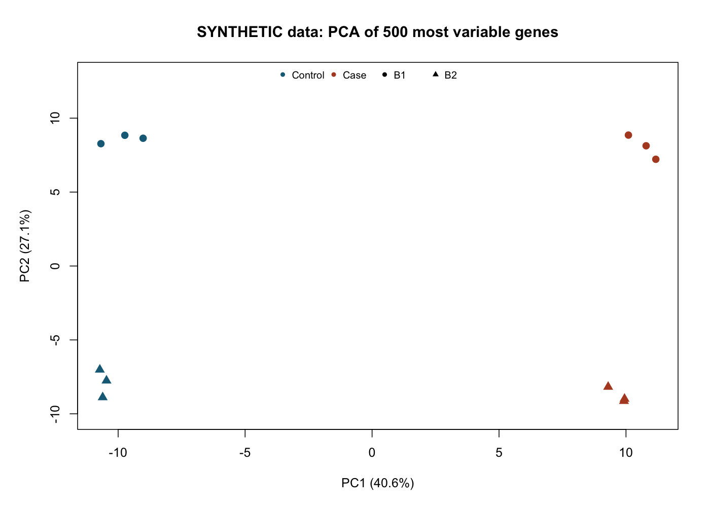
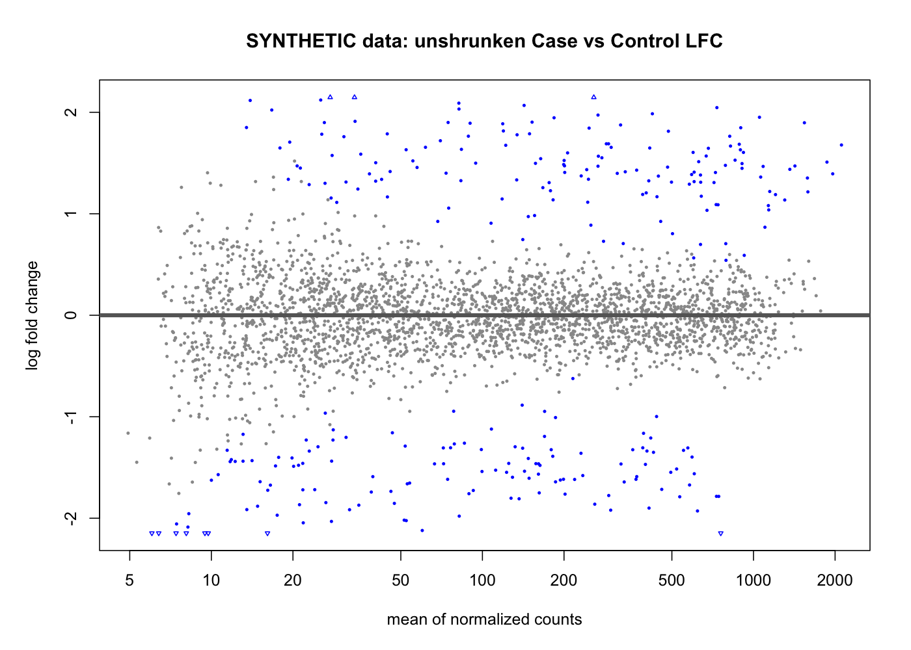
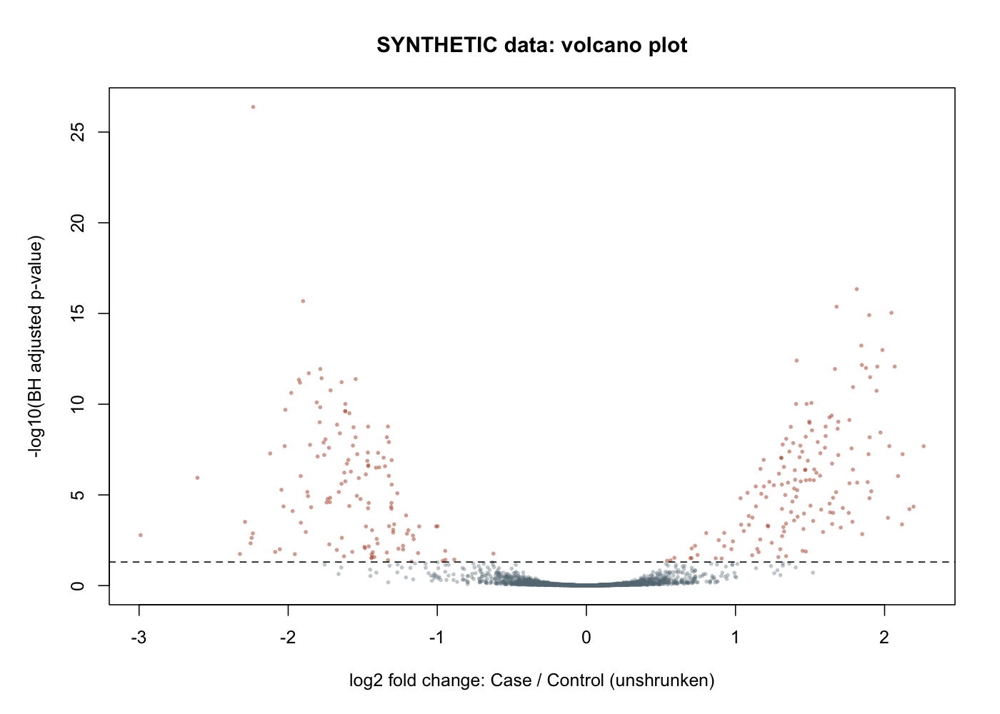
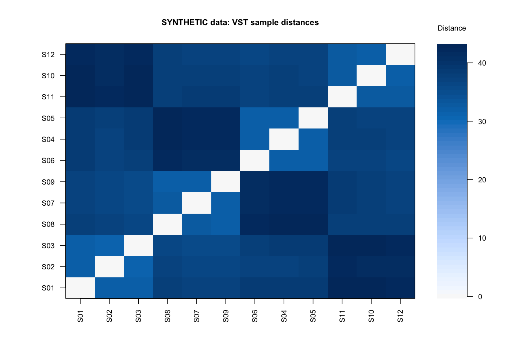

Bulk RNA-seq 與可變剪接 · 逐頁詳解 講師：奇美醫院精準醫學核心實驗室組長邱家軍
依完整學員講義擷取對應章節；可搭配投影片或列印閱讀。教學假設、合成輸出與方法介紹均非臨床發現。
01 · Bulk RNA-seq 從檢體到差異表現與可變剪接 02 · DNA 問「有什麼」，RNA 問「正在使用什麼」 03 · 一個基因，可以產生不只一種 RNA 04 · 免疫基因變高，可能只是免疫細胞變多 05 · 同一份 RNA 資料，分成兩條證據路徑 06 · 先把「想找 biomarker」寫成可分析的比較 07 · 5 位病人、10 個 lane，仍是 5 位病人 08 · 完全混雜時，軟體無法分開疾病與批次 09 · 數字與病人配錯，模型再精密也沒有用 10 · RIN 與 DV200：看的是不同品質面向 11 · Poly(A) 富集與 rRNA 去除，不是同一母體 12 · Paired-end 與 strandedness，回答不同問題 13 · 先辨認檔案層次，再決定可以分析什麼 14 · 同樣寫 GRCh38，註解也可能不同 15 · FastQC 警示，是回查線索，不是淘汰指令 16 · Mapping 95%，仍可能沒多少可用 mRNA 17 · 補定序、重新製備、暫停推論：不是同一件事 18 · RNA 的一條 read，可能跨過基因體的內含子 19 · 兩條常見路線：先定位到 genome，或估計 transcript 20 · 每格是歸屬計數，不是實際分子總數 21 · 長兩倍的 RNA，本來就可能被讀到更多次 22 · TPM 相同，不代表有相同的證據量 23 · 少數 RNA 暴增，會擠掉其他 RNA 的抽樣名額 24 · 100 與 200 counts，正規化後可能一樣 25 · VST 給探索圖使用；raw counts 留給計數模型 26 · 先看點是誰，再問分開代表什麼 27 · 深色代表較遠，不是基因表現較高 28 · 熱圖顏色的意思，由你輸入的數字決定 29 · 平均同樣差兩倍，可信度也可能不同 30 · Dispersion 讓模型容納額外的生物變異 31 · 模型控制哪些因素？結果又是誰對誰？ 32 · 同病人前後比較，不等於兩群獨立病人 33 · log2FC 告訴你幅度，SE 告訴你估計多穩 34 · p 值與 FDR，都不是單一基因為假的機率 35 · 沒有 padj，不一定是「沒有差異」 36 · 這次示範從合成 counts 開始，不是 FASTQ 37 · 程式不是黑箱：每行對應一個分析決定 38 · GENE0001：效應、標準誤與證據要一起看 39 · MA 圖：低表現區的倍數可能特別不穩 40 · 左右是效應，上下是統計證據 41 · 哪一個基因更值得追？不能只看 padj 42 · 基因總量沒變，RNA 形式卻可能翻轉 43 · 剪接體選擇切接位置，連出不同成熟 RNA 44 · SE 與 MXE：換的是外顯子組合 45 · A5SS、A3SS 與 RI：不是把整個基因換一條股 46 · DGE、DTE、DTU、DEU，不是四個同義詞 47 · E1 的 read 只支持基因；E1–E3 才支持跳過 E2 48 · PSI：可辨識形式中，包含事件的比例 49 · ΔPSI＝−0.25，是下降 25 個百分點 50 · 先選問題，再選事件、intron cluster 或 exon bin 51 · Sashimi plot 是接合證據，不是完整 RNA 照片 52 · RNA 結構改變，不等於蛋白質功能已改變 53 · 拿到圖以前，先確認可追溯的資料包 54 · 從已保存的圖，回到程式與方法文件 55 · 四個 RNA-seq 工具：本堂優先使用 iDEP 56 · OpenAI NGS Analysis Workbench 01 · Bulk RNA-seq 從檢體到差異表現與可變剪接 1.1 基因不是單一、固定的 RNA 分子
基因（gene）是基因體上具有功能性產物的序列單位。轉錄（transcription）是細胞以 DNA 為模板製造 RNA 的過程；轉錄體（transcriptome）則是某一細胞或組織在特定狀態下所包含的 RNA 集合。不同組織即使大致擁有相同 DNA，也可能使用不同基因，因此有不同 RNA 組成。治療、發炎、缺氧與取樣處理也可能改變這個集合。
對多數人類蛋白質編碼基因而言，剛產生的前驅信使 RNA（pre-mRNA）包含外顯子與內含子。剪接（splicing）移除內含子，將選定的外顯子連接起來。這裡的外顯子（exon）指成熟轉錄本保留下來的區段，不是「一定會翻譯成蛋白質的區段」；非轉譯區（untranslated region，UTR）也可以位於外顯子。內含子（intron）通常在成熟過程被移除，但有些轉錄本會保留部分內含子。
轉錄本（transcript）是某個具體 RNA 序列形式。同一基因可以選用不同轉錄起點、剪接方式或末端加工位置，形成不同的 transcript isoforms（轉錄本異構型）。「基因表現上升」通常指分配給這個基因的整體 RNA 訊號增加；「某個轉錄本增加」則是其中一種形式改變，兩者不必然同步。GENCODE 的註解會用不同 gene_id、transcript_id 與 exon 記錄這些層次。GENCODE 格式說明
1.4 RNA-seq 的基本數字是抽樣結果
常見短讀長 RNA-seq 先將 RNA 轉成互補 DNA（complementary DNA，cDNA），製成可供儀器讀取的文庫，再對片段定序。讀段（read）是儀器讀出的序列；計數（count）則是分析流程把符合條件的讀段或片段歸給某個基因後得到的數字。Count 不等於細胞中實際 RNA 分子總數，因為萃取、建庫、擴增、定序抽樣與歸屬規則都會影響它。
一般 bulk RNA-seq 主要提供相對量。若整個樣本每顆細胞的 RNA 都增加兩倍，但兩個文庫最後各讀取相同數目的片段，所有基因在讀段中的占比可能仍相近。因此「沒有看到相對表現差異」不等於每顆細胞的絕對 RNA 量完全相同。要回答絕對量問題，需要另外設計細胞數、RNA 輸入量或外加標準等尺度資訊。
高雄長庚臨床生物資訊系列 · 學員版 · 2026-10-05
回到投影片
02 · DNA 問「有什麼」，RNA 問「正在使用什麼」 1.1 基因不是單一、固定的 RNA 分子
基因（gene）是基因體上具有功能性產物的序列單位。轉錄（transcription）是細胞以 DNA 為模板製造 RNA 的過程；轉錄體（transcriptome）則是某一細胞或組織在特定狀態下所包含的 RNA 集合。不同組織即使大致擁有相同 DNA，也可能使用不同基因，因此有不同 RNA 組成。治療、發炎、缺氧與取樣處理也可能改變這個集合。
對多數人類蛋白質編碼基因而言，剛產生的前驅信使 RNA（pre-mRNA）包含外顯子與內含子。剪接（splicing）移除內含子，將選定的外顯子連接起來。這裡的外顯子（exon）指成熟轉錄本保留下來的區段，不是「一定會翻譯成蛋白質的區段」；非轉譯區（untranslated region，UTR）也可以位於外顯子。內含子（intron）通常在成熟過程被移除，但有些轉錄本會保留部分內含子。
轉錄本（transcript）是某個具體 RNA 序列形式。同一基因可以選用不同轉錄起點、剪接方式或末端加工位置，形成不同的 transcript isoforms（轉錄本異構型）。「基因表現上升」通常指分配給這個基因的整體 RNA 訊號增加；「某個轉錄本增加」則是其中一種形式改變，兩者不必然同步。GENCODE 的註解會用不同 gene_id、transcript_id 與 exon 記錄這些層次。GENCODE 格式說明
1.2 RNA 很多，不代表蛋白質一定很多
信使 RNA（messenger RNA，mRNA）提供翻譯蛋白質的模板；核糖體 RNA（ribosomal RNA，rRNA）是核糖體的重要組成；非編碼 RNA 則不以產生蛋白質為主要功能。常見長鏈非編碼 RNA 簡稱 lncRNA，但「非編碼」不等於沒有功能。不同建庫方法會富集不同 RNA，因此「做 RNA-seq」本身還不足以知道測到哪些 RNA。
某個 RNA 的量是製造與降解共同作用的結果。例如 RNA 比較穩定、降解較慢，即使轉錄速度沒有增加，也可能累積更多。蛋白質還受到翻譯效率、蛋白質降解與修飾等影響。因此 RNA-seq 可以指出表現關聯，不能直接把 RNA 上升等同蛋白質活性增加，也不能只憑單次採樣判斷變化是由轉錄速率還是降解造成。
依第三堂完整學員講義整理；按 E 展開原理、例子與限制
回到投影片
03 · 一個基因，可以產生不只一種 RNA 1.1 基因不是單一、固定的 RNA 分子
基因（gene）是基因體上具有功能性產物的序列單位。轉錄（transcription）是細胞以 DNA 為模板製造 RNA 的過程；轉錄體（transcriptome）則是某一細胞或組織在特定狀態下所包含的 RNA 集合。不同組織即使大致擁有相同 DNA，也可能使用不同基因，因此有不同 RNA 組成。治療、發炎、缺氧與取樣處理也可能改變這個集合。
對多數人類蛋白質編碼基因而言，剛產生的前驅信使 RNA（pre-mRNA）包含外顯子與內含子。剪接（splicing）移除內含子，將選定的外顯子連接起來。這裡的外顯子（exon）指成熟轉錄本保留下來的區段，不是「一定會翻譯成蛋白質的區段」；非轉譯區（untranslated region，UTR）也可以位於外顯子。內含子（intron）通常在成熟過程被移除，但有些轉錄本會保留部分內含子。
轉錄本（transcript）是某個具體 RNA 序列形式。同一基因可以選用不同轉錄起點、剪接方式或末端加工位置，形成不同的 transcript isoforms（轉錄本異構型）。「基因表現上升」通常指分配給這個基因的整體 RNA 訊號增加；「某個轉錄本增加」則是其中一種形式改變，兩者不必然同步。GENCODE 的註解會用不同 gene_id、transcript_id 與 exon 記錄這些層次。GENCODE 格式說明
11.1 從剪接的生物學開始
前驅 mRNA 上的內含子並不是自行掉落。細胞透過剪接體（spliceosome）辨識剪接位置；剪接體是由小核 RNA 與多種蛋白質共同組成的複合體，協助切除內含子並接合相鄰外顯子。內含子靠近 RNA 5′ 端的邊界稱為 5′ splice site，也稱 donor site；靠近 3′ 端的邊界稱為 3′ splice site，也稱 acceptor site。內含子內的分枝點及鄰近調控序列也參與這個過程。這裡的 5′、3′ 是沿著轉錄本方向，不是永遠等於基因體座標由小到大；位於負股的基因尤其容易看反。
所謂可變剪接（alternative splicing），是同一基因的前驅 RNA 可以採用不同剪接位置或不同外顯子組合，產生不同成熟 RNA。調控蛋白質的量、其結合位置、細胞狀態或剪接相關序列的改變，都可能影響選擇。不同組織有不同剪接比例不一定是病變；疾病樣本有比例差異，也不代表一定由 DNA 突變造成。
同一前驅 RNA： [E1] ---- intron ---- [E2] ---- intron ---- [E3]
形式一： [E1][E2][E3] 保留中間外顯子
形式二： [E1] [E3] 跳過中間外顯子圖中的 E 是 exon 的縮寫，橫線代表會被移除的區域，不是按實際長度繪製。兩種形式仍屬同一基因。若只把所有讀段加成一個 gene count，中間外顯子是否被使用的資訊就可能被隱藏。
GENCODE · 原創結構示意，非按長度繪製
回到投影片
04 · 免疫基因變高，可能只是免疫細胞變多 1.3 Bulk 指混合測量，不是每顆細胞的平均值都可直接讀出
Bulk RNA-seq 將一份檢體中許多細胞的 RNA 合在一起分析。例如腫瘤切片可能同時有癌細胞、淋巴球、纖維母細胞與血管細胞。測到的某個基因訊號上升，可以是某類細胞每顆表現增加，也可以是這類細胞變多，或兩者同時發生。
假設基因 X 只在免疫細胞表現，兩組免疫細胞每顆都產生相同量的 X，但免疫細胞占比由 10% 增為 30%。即使沒有任何細胞改變自己的調控，整塊組織的 X 訊號仍可能上升。這個例子只是說明混合效應；真實資料還受到不同細胞的 RNA 總量與捕捉效率影響，所以 RNA 貢獻比例不必等於細胞數比例。
反卷積（deconvolution）試圖利用已知細胞表現特徵，估計混合樣本中各細胞類型的貢獻。它需要適合的參考與模型假設，不能保證精確還原每種細胞。是否把細胞組成當作共變數，更取決於研究問題：若免疫浸潤本來就是欲觀察的疾病機制，直接調整掉可能改變原本要估計的效應。本堂先理解限制，細胞層級分析留待後續 single-cell 課程。
教學假設；不是以細胞比例直接換算真實 counts
回到投影片
05 · 同一份 RNA 資料，分成兩條證據路徑 12.2 從資料到結果的兩條分支
研究問題、獨立樣本、分組／配對與必要共變數
→ 核對 metadata 和 FASTQ → 原始讀段 QC → 必要處理及再 QC
→ 使用一致參考的 RNA 比對／定量 → RNA 特有 QC 與樣本稽核
├─ gene counts 或適當 transcript 匯入
│ → 正規化、樣本探索 → 指定 design／contrast
│ → 差異表現、完整結果表、候選驗證
└─ junction／exon-bin／transcript-level 證據
→ 可分析事件及每位病人的覆蓋
→ 適合設計的剪接／使用比例模型
→ ΔPSI 或相對使用效應、FDR、局部圖與結構驗證箭頭不是「QC 沒過就無條件刪除」。遇到異常，應回到對應資料與操作紀錄判斷原因，必要時暫停推論、重新製備或調整可以回答的問題。DGE 與剪接分支可能共用 FASTQ/BAM，卻不能互相代替；建庫前就應先確認兩種問題是否都在研究範圍內。
11.4 Junction reads 為什麼重要？
Splice junction 是成熟 RNA 中兩段原本在基因體上不相鄰的序列接在一起的位置。跨過這個位置的 read 比對回基因體時，需要跨越內含子，因此 BAM 的 CIGAR 會有 N。Read 在接合點兩邊能連續比對的片段稱為 anchors；兩側都有足夠且具辨識力的序列，通常比僅一側很短的比對更有說服力。
若某段 read 完全落在 E1，而 E1 被所有 isoforms 共用，它支持這個基因有表現，卻不能區分是否跳過 E2。相反地，一條可靠的 E1–E3 junction read 直接支持跨過 E2 的局部結構。這就是為什麼分析剪接通常需要 BAM、junction counts 或 transcript-level quantification，而不能只拿 gene count matrix「再跑一個選項」。從 gene matrix 中已丟掉的接合位置，通常無法事後還原。
Junction 存在不等於它一定是真實且有功能。低品質比對、重複序列、極短 anchor 或定序錯誤可能產生少量假接合。新發現的 junction 也要看是否跨樣本重現、是否符合局部序列與股向，而不是只以註解中有沒有它決定真假。
依第三堂完整學員講義整理；按 E 展開原理、例子與限制
回到投影片
06 · 先把「想找 biomarker」寫成可分析的比較 2.1 貫穿案例：治療前腫瘤能否看出與後續反應相關的 RNA 特徵？
假設我們比較免疫治療後有反應者與無反應者的「治療前」腫瘤 RNA。反應者稱 responder，無反應者稱 non-responder，簡記 R 與 NR。這是依後續結果分組的關聯研究，並不是把一組人隨機分配成「會反應」。因此即使找出差異基因，也只能先說與反應分組相關，不能直接說這些基因造成療效。
主要比較（contrast）可以寫成「在預先指定的癌別與採樣條件下，比較 R 相對 NR 的基因表現，調整已知建庫批次」。寫出這一句，才知道正的 log2 fold change 要表示哪一組較高，也知道哪些樣本不應混入，例如治療後切片或另一種處置時點。反應的臨床定義、追蹤期間、入組標準及分析前已知的共變數也應事先記錄，不能看到結果後才更換分組。
2.5 Metadata 是分析的一部分
Metadata 是描述樣本來源與處理過程的資料，不是可以等分析完成才補的行政附件。Sample sheet 用一列對應一個分析樣本，至少能追溯 sample ID、patient ID、condition、採樣時點、組織、保存方式、RNA 品質、建庫方法、方向性與批次。檔名不應是唯一的身分依據，去識別化 ID 與原始身分的對照應另由授權人員保管。
sample_id patient_id condition batch preservation library_type
S01 P01 NR B1 frozen stranded_polyA
S02 P02 R B1 frozen stranded_polyA
S03 P03 NR B2 frozen stranded_polyA
S04 P04 R B2 frozen stranded_polyA這是欄位示意，不是四位病人就足夠的設計建議。未知值應明確標記並回查，不能把不知道的文庫方向性隨便填成 unstranded。分析前還要確認計數矩陣欄名與 sample sheet 的樣本名稱完全一致，而且排序一致；名稱相同但順序不同，仍可能把病人的數字配給錯誤分組。
概念案例；本課合成示範另以 Case／Control 命名，並非真實反應資料
回到投影片
07 · 5 位病人、10 個 lane，仍是 5 位病人 2.2 生物重複、技術重複與研究單位
生物重複（biological replicate）是用來反映研究族群內生物差異的獨立單位。對獨立病人比較而言，通常以病人為單位；對細胞培養研究，則需依實驗安排判斷是否為獨立培養與處理，而不能把同一孔拆成三管就當三個生物重複。
技術重複（technical replicate）是對同一生物材料的重複量測，例如同一文庫分兩個 lane 定序。Lane 是定序晶片上的讀取分區；兩個 lane 可以增加對同一文庫的觀察，不會增加病人數。將技術重複當獨立病人會低估變異、誇大統計信心，稱為偽重複（pseudoreplication）。符合相同文庫與處理條件的 lane 通常可在適當階段合併；獨立萃取或不同建庫方式則不能不查背景就直接相加。
同一病人的多個病灶或治療前後檢體也不是彼此完全獨立。這些資料有價值，但分析必須保留病人關聯。若 10 位病人各有前後兩份樣本，資料列有 20 個樣本，獨立病人仍是 10 位。配對設計（paired design）以同一病人的前後差異為核心，能減少不同病人基礎表現差異的干擾。
2.3 深度與樣本數解決不同問題
增加定序深度，主要增加同一樣本可觀察的片段，有助低表現基因及剪接接合點的支持。增加獨立病人，則增加估計族群變異與效應的資訊。若每組只有一位病人，再多 reads 也不能可靠估計病人間的變異。
樣本數規劃應考慮預期變化幅度、病人異質性、低表現目標、配對、共變數與多重檢定。統計功效（power）是當指定效應確實存在時，分析能將其辨認出來的機率。沒有適用所有 RNA-seq 研究的「每組三個就足夠」或「固定幾千萬 reads 保證成功」。剪接研究還需要每個事件足夠的 informative reads，因此總讀段數相同，也不表示每個事件都有相同檢定能力。
B.1 同一份 RNA 分兩次定序，樣本數增加了嗎？
題目：5 位病人，每人同一份 RNA 文庫分兩個 lane 定序，共 10 對 FASTQ。可以把 n 寫成 10 個獨立病人嗎？
解析：不能。這裡是 5 個生物來源，各有技術層面的重複讀取。若把 10 份當獨立個體，會低估病人間變異，造成偽重複。確認同一文庫、參考與處理一致後，可依流程整合其讀段或計數，同時保留 lane QC；獨立病人數仍是 5。若是同病人的兩次採樣，又涉及重複測量與時間，不能直接當成同文庫技術重複合併。
依第三堂完整學員講義整理；按 E 展開原理、例子與限制
回到投影片
08 · 完全混雜時，軟體無法分開疾病與批次 2.4 共變數、混雜與批次效應
共變數（covariate）是除了主要分組以外，可能與表現有關、準備放入分析模型的變項，例如年齡、採樣位置或批次。混雜（confounding）是某個因素同時與分組及結果相關，使觀察到的組間差異混入其他解釋。共變數不是越多越好：樣本少時加入太多項會使估計不穩，且調整中介因素可能把真正想研究的路徑移除。
批次效應（batch effect）是萃取日期、建庫試劑批號、操作人員或定序批次等造成的系統性差異。最有效的處理通常從實驗安排開始：讓每個批次同時包含不同研究組別，並對重要背景變項做平衡或隨機分配，而不是所有 R 用新試劑、所有 NR 用舊試劑，事後再期待軟體補救。
情境
批次 1
批次 2
可以從資料分開估計嗎？
平衡設計
R 3 人、NR 3 人
R 3 人、NR 3 人
具有組內／批次內對照，可建模，仍需 QC
部分混雜
R 1 人、NR 5 人
R 5 人、NR 1 人
可能可估計，但高度依賴少量交叉樣本、精確度較差
完全混雜
只有 NR 6 人
只有 R 6 人
不能靠這份資料唯一分開分組與批次效應
最後一種稱為不可識別（non-identifiable）：模型沒有足夠獨立資訊來知道差異來自疾病還是批次。即使軟體輸出一張混在一起的 PCA，也不能證明已成功保留生物效應而移除批次。設計矩陣是否滿秩的檢查會在統計章說明。DESeq2：模型與混雜
B.5 完全混雜與部分不平衡有何差別？
題目：R 全部在 B1、NR 全部在 B2，能用 ~ batch + condition 解決嗎？若兩批都有兩組，但比例不平衡呢？
解析：第一種無法從資料分開組別與批次，設計不滿秩；不能靠軟體名稱或漂亮 PCA 修復。第二種可能有可識別性，能嘗試在模型中控制 batch，但如果某組在某批只有極少樣本，效果估計仍可能不穩且依賴模型假設。需要看交叉表、品質與敏感度分析，必要時補樣本。不能將「非完全混雜」等同「完全沒有偏差」。
DESeq2
回到投影片
09 · 數字與病人配錯，模型再精密也沒有用 2.5 Metadata 是分析的一部分
Metadata 是描述樣本來源與處理過程的資料，不是可以等分析完成才補的行政附件。Sample sheet 用一列對應一個分析樣本，至少能追溯 sample ID、patient ID、condition、採樣時點、組織、保存方式、RNA 品質、建庫方法、方向性與批次。檔名不應是唯一的身分依據，去識別化 ID 與原始身分的對照應另由授權人員保管。
sample_id patient_id condition batch preservation library_type
S01 P01 NR B1 frozen stranded_polyA
S02 P02 R B1 frozen stranded_polyA
S03 P03 NR B2 frozen stranded_polyA
S04 P04 R B2 frozen stranded_polyA這是欄位示意，不是四位病人就足夠的設計建議。未知值應明確標記並回查，不能把不知道的文庫方向性隨便填成 unstranded。分析前還要確認計數矩陣欄名與 sample sheet 的樣本名稱完全一致，而且排序一致；名稱相同但順序不同，仍可能把病人的數字配給錯誤分組。
A.2 R 資料物件與基本符號
R 的 matrix 是規則的二維矩陣，適合放每格皆為數值的基因 counts；data frame 是一張可包含不同欄位型態的表格，適合放文字 ID、組別與數值年齡。factor 用來明確表示類別及層級順序，例如把 Control 設為第一層級，方便定義參考組。不是所有數字欄位都應當連續量；若 1、2 代表兩個批次，它們是類別代碼，不是第二批具有第一批兩倍的生物量。
<- 是把右側結果存入左側名稱；# 後面是註解，不會執行；[列, 欄] 用來挑選矩陣的一部分；~ 在模型公式中表示後面列出解釋變數，不是數學上的「約等於」。stopifnot 是安全檢查，條件不成立就停止。停止有時比繼續產生看似合理的圖更好，例如 counts 的欄順序與病人表列順序不一致時，就不該繼續檢定。
A.3 模型主程式逐段說明
下面是完整程式中的核心步驟節錄，不是可直接取代完整程式的獨立檔案；counts_matrix 與 meta 已在前面建立。
# 檢查 counts 的每一欄，是否與 metadata 的每一列指向相同樣本。 stopifnot (identical (colnames (counts_matrix), rownames (meta)))# 展開「批次＋組別」模型；滿秩代表沒有完全重複的解釋欄位。 <- model.matrix (~ batch + condition, meta)stopifnot (qr (design_matrix)$ rank == ncol (design_matrix))# 保留未轉換的 counts，連同樣本資訊與模型一起建立分析物件。 <- DESeqDataSetFromMatrix (counts_matrix, meta,design = ~ batch + condition)# 示範性的低計數過濾：至少 3 個樣本各有 10 counts。 <- rowSums (counts (dds) >= 10 ) >= 3 <- dds[keep, ]# 估計尺度與離散程度、擬合各基因模型，並建立預設的 Wald 檢定。 <- DESeq (dds, quiet = TRUE )# 指定 Case 相對 Control；不是讓軟體猜想研究者要的方向。 <- results (dds, contrast = c ("condition" , "Case" , "Control" ),alpha = 0.05 )# 取出正規化後 counts；這份矩陣不是 batch-corrected expression。 <- counts (dds, normalized = TRUE )# 建立供 PCA 等探索使用的尺度；不將此矩陣送回 counts 模型。 <- varianceStabilizingTransformation (dds, blind = FALSE )qr 透過矩陣分解判定可辨識的獨立欄位數，這裡不要求記住分解演算法。滿秩是必要的基本條件，不是「樣本數已足夠」或「所有混雜已消除」的認證；高度但不完全混雜仍可能使估計不精確。
rowSums(counts(dds) >= 10) 先對每格判斷是否至少 10，再逐基因加總達標樣本數。這跟「所有樣本 counts 相加至少 30」不是同一規則：一個樣本 30、其餘全零，符合後者卻不符合前者。本範例的門檻僅供練習，不是對低表現臨床標記的通用剔除標準。
DESeq() 不會替你判斷 Control／Case 的醫學定義，也不會自動修正 sample sheet。results(..., alpha=0.05) 將 0.05 作為獨立過濾等步驟所使用的目標水準；它仍回傳完整結果，不是只回傳顯著基因。要展示候選，需要另以明確規則選擇，而完整表格應保留。
blind=FALSE 讓轉換利用設計相關的 dispersion 估計，並不把 condition 或 batch 效應扣掉。完整程式以 VST 後變異最大的 500 個基因做 PCA，這是圖形的選基因規則；不能把 PCA 上的座標當成每個病人的某一個基因表現。
依第三堂完整學員講義整理；按 E 展開原理、例子與限制
回到投影片
10 · RIN 與 DV200：看的是不同品質面向 3.1 取樣與保存如何影響 RNA
RNA 容易受核糖核酸酶降解，離體後組織也可能因缺氧與壓力繼續改變表現。採樣至穩定保存的時間、溫度、組織厚度、凍融次數、壞死程度與萃取批次都值得記錄。腫瘤樣本還應有病理資訊，否則免疫基因上升可能只是切到不同細胞區域。
FFPE 是福馬林固定石蠟包埋，方便保存組織形態，但固定與儲存可能造成 RNA 片段化、交聯與化學修飾。低品質 RNA 不等於完全不能使用，而是必須選合適的建庫方法、降低過度推論，並檢查哪些基因區域仍有資料。如果所有 R 是新鮮冷凍、所有 NR 是 FFPE，保存方法本身就與研究分組混雜。
3.2 RIN 與 DV200：兩個不同角度的品質指標
RNA integrity number（RIN，RNA 完整性指數）利用電泳訊號的整體形狀，包括核糖體 RNA 相關峰與降解分布，給出通常介於 1–10 的分數。它不是某個基因 RNA 的直接完整率，也不是 DNA 污染率。高分通常支持 RNA 較完整，但同樣 RIN 的兩份樣本，仍可能有不同長度分布與建庫表現。
DV200 指 RNA 片段長度超過 200 個核苷酸的比例，通常由片段分析儀的訊號估計。例：DV200=60% 表示按該方法估計，約六成 RNA 訊號落在大於 200 nt 的片段範圍；不是六成基因完整，也不是六成 reads 會成功比對。對已明顯降解的 FFPE，片段分布有時比只看 rRNA 峰的指數更直接影響建庫選擇。
兩者都應連同輸入量、濃度、保存方法與試劑規格判讀。不同試劑對品質及輸入量要求不同，不能把某份產品文件的門檻當作所有研究的淘汰標準。Illumina 建庫技術文件
依第三堂完整學員講義整理；按 E 展開原理、例子與限制
回到投影片
11 · Poly(A) 富集與 rRNA 去除，不是同一母體 3.3 Poly(A) selection 與 rRNA depletion 選到不同的 RNA
許多真核成熟 mRNA 帶有 poly(A) tail，也就是末端的一串 A。Poly(A) selection 利用與 A 互補的 oligo-dT 捕捉這類 RNA，減少大量 rRNA 的占比，讓定序資源集中在帶 poly(A) 尾的轉錄本。但它不是捕捉所有 RNA：不帶 poly(A) 的 RNA 可能流失；降解後若片段與尾端分離，也可能產生偏差。因此此方法的結果不代表完整 total RNA 組成。
rRNA depletion（核糖體 RNA 去除）則針對高豐度 rRNA，透過探針與酵素或其他方法移除，再對剩餘 RNA 建庫。它可保留更廣泛的非 rRNA，包括部分非編碼 RNA 與尚未成熟的 RNA。這也表示內含子 reads 可能較多，不應自動視為失敗；同時需要更仔細區分真實保留內含子、未成熟轉錄與 DNA 污染。
選擇應由研究問題、檢體品質與目標 RNA 決定。要比較組間表現，最好使用一致的方法；poly(A) 與 rRNA depletion 所測的 RNA 母體不同，不能保證只放一個 batch 變項就消除所有差異。Poly(A) 方法 、rRNA 去除方法
3.6 全轉錄本區域覆蓋與 3′ counting
一般 fragmented RNA-seq 從轉錄本不同位置取樣，因此可用來看沿基因的覆蓋與許多內部剪接接合點；這裡「全長區域覆蓋」不表示每條短 read 就是一個完整轉錄本。3′ RNA-seq 則主要讀取靠近 RNA 3′ 端的區域，常用於經濟地比較基因總量，有些方法搭配 UMI。
3′ 計數可能足以回答基因表現問題，但對遠離 3′ 端的 exon skipping 幾乎沒有直接證據。不能等到只有 gene count matrix 才要求重建所有剪接事件；分析能力由建庫與保留檔案共同決定。若核心目的是完整 isoform 結構，長讀長 RNA 定序可提供更長的連接資訊，但仍需考慮抽樣、錯誤、截短與定量偏差，不能把它當作所有問題的一鍵替代方案。
B.11 Intronic reads 增加是不是大量 RI？
題目：病例用 rRNA depletion、對照用 poly(A) selection，病例 intronic fraction 較高。能否直接寫「病例有廣泛內含子滯留」？
解析：不能。兩種方法對 pre-mRNA 與非 poly(A) RNA 的保留不同，製備方式已與組別混雜。應先辨認策略差異、核內 RNA 與 DNA 污染等原因，再用適合的局部事件證據評估 RI。即使所有 intronic reads 都是真的 RNA，也不代表每一段都屬成熟且有功能的滯留內含子轉錄本。
依第三堂完整學員講義整理；按 E 展開原理、例子與限制
回到投影片
12 · Paired-end 與 strandedness，回答不同問題 3.4 建庫、接頭、index 與 UMI
文庫（library）是經過處理、具備定序所需結構的一群核酸片段。常見步驟包含 RNA 富集或去除、片段化、逆轉錄產生 cDNA、接頭連接及 PCR 擴增，實際順序依試劑不同。接頭（adapter）是人工加入、供儀器結合與讀取的序列；index 是辨識不同樣本的條碼，讓多份文庫混合定序後能拆開。
UMI（unique molecular identifier，獨特分子識別碼）則通常在大規模擴增前標記分子，協助把疑似同一來源的複本分組。Sample index 回答「來自哪個樣本」，UMI 回答「可能來自哪個原始分子」，兩者不可混用。UMI 也不是無誤的分子身分證，仍需處理條碼碰撞、定序錯誤與分組規則。
RNA 與 DNA 的重複讀段判讀不同：高表現 RNA 本來就可能產生很多相同序列。因此非 UMI 的一般 RNA-seq 不宜沿用 DNA 分析的直覺，把相同比對座標全部刪掉；那可能把真實高表現訊號一起刪除。是否去重應依文庫原理與經驗證的流程決定。FastQC：RNA 文庫的重複序列
3.5 Single-end、paired-end 與 strandedness
Single-end 只讀片段的一端；paired-end 從同一個 cDNA 片段兩端讀取，產生 R1、R2。兩端屬於同一片段，通常不是兩個獨立 RNA 分子。若用 paired-end 進行 gene counting，多數常見流程希望一個可歸屬片段計一次；軟體參數應明確說明是在計 reads 還是 fragments，而不是看到兩個 FASTQ 就把分母乘二。
Paired-end 提供兩端相對位置及片段長度資訊，有助定位、處理相似序列與轉錄本判別，但不能保證重建完整 RNA。增加 read length 可以讓單條 read 跨過更多有辨識力的序列或接合點；它與增加讀段數不是同一件事。目標若是低豐度剪接事件，需要考慮文庫覆蓋、讀長、片段長度及樣本重複，而不只追求總 Gb。
Strandedness（文庫方向性）指建庫是否保留原 RNA 來自哪一條 DNA 股的資訊。有些基因在相反方向重疊，知道方向能減少錯誤歸屬。Reverse-stranded 不代表資料錯了，而是試劑規定 R1 相對原 RNA 具有特定反向關係。不同軟體使用的名稱可能不同，應把實際試劑、R1／R2 關係與工具參數對照，並由資料檢查是否符合；不是只看 BAM 的正反股比例就能直接推定所有文庫設定。方向性背景 、RSeQC
3.6 全轉錄本區域覆蓋與 3′ counting
一般 fragmented RNA-seq 從轉錄本不同位置取樣，因此可用來看沿基因的覆蓋與許多內部剪接接合點；這裡「全長區域覆蓋」不表示每條短 read 就是一個完整轉錄本。3′ RNA-seq 則主要讀取靠近 RNA 3′ 端的區域，常用於經濟地比較基因總量，有些方法搭配 UMI。
3′ 計數可能足以回答基因表現問題，但對遠離 3′ 端的 exon skipping 幾乎沒有直接證據。不能等到只有 gene count matrix 才要求重建所有剪接事件；分析能力由建庫與保留檔案共同決定。若核心目的是完整 isoform 結構，長讀長 RNA 定序可提供更長的連接資訊，但仍需考慮抽樣、錯誤、截短與定量偏差，不能把它當作所有問題的一鍵替代方案。
RSeQC
回到投影片
13 · 先辨認檔案層次，再決定可以分析什麼 4.1 先把檔案放回資料流
研究問題、sample sheet、RNA 品質與建庫紀錄
↓
FASTQ：序列與逐鹼基品質
↓
┌────────────┴───────────────┐
↓ ↓
基因體剪接感知比對 轉錄本定量
FASTA＋GTF → BAM 轉錄本參考 → quant.sf
↓ ↓
featureCounts 等計數 tximport 等匯入
└────────────┬───────────────┘
↓
基因計數＋metadata → 樣本 QC → 統計模型 → 差異表現
剪接支線：保留 BAM／junction／轉錄本定量
→ 事件或比例 → 差異剪接／使用比例 → 證據查核這是概念資料流，不代表各分支的輸出可任意互換。某些剪接工具需要基因體 BAM 與特定接合點證據；只有 Salmon 的基因層級彙整表，不能直接當作其輸入。
4.2 FASTA 與 FASTQ：參考序列不等於樣本讀段
FASTA 用 > 開頭的標題搭配序列，常用於參考基因體或轉錄本。參考基因體包含基因間區及內含子；轉錄本參考則按註解把成熟 RNA 的相應區段組合起來。兩者都是比對／定量的座標與序列基礎，不是這位病人的實測結果。
FASTQ 通常每筆讀段有四行：識別碼、鹼基序列、+ 分隔行、逐鹼基品質字串。品質字元經編碼對應 Phred Q，定義為 Q=−10 log10(p)，p 是鹼基判讀錯誤機率的估計。Q30 對應 p=0.001，不是「整條 read 99.9% 正確」，更不是基因表現量的信賴程度。序列長度與品質字串長度應相等；.gz 表示壓縮，不改變資料意義。
@toy_read_001
ACGTACGT
+
IIIIIIII這是八個鹼基的人工格式例子，I 在常見 Phred+33 編碼中代表 Q40。R1 與 R2 檔案必須是相同片段集合的對應兩端；檔名相似不代表配對一定正確。
4.3 SAM、BAM、CRAM 與 CIGAR
SAM 是比對結果的文字格式，BAM 是其二進位表示，CRAM 則使用不同壓縮策略，解碼常需要相符的參考序列。比對檔通常記錄讀段名稱、旗標、染色體、位置、比對品質 MAPQ、CIGAR、配對資訊與序列。MAPQ 評估定位可信度，與 FASTQ 中每個鹼基的 base quality 是不同層次。索引如 .bai、.csi、.crai 讓工具快速查某個區域，不會創造新的讀段。
CIGAR 是描述 read 與參考序列如何對齊的操作字串。例 50M1000N50M 表示 50 個對齊鹼基、跳過參考上的 1000 個鹼基，再對齊 50 個鹼基。RNA 比對的 N 常表示跨過內含子，因此該 read 支持外顯子接合。M 可以包含 match 與 mismatch，不等於全部正確；S 表示 soft clipping，序列仍在記錄中但沒有納入對齊；D 是相對 read 的參考缺口，不應把常見剪接 N 直接當成 DNA deletion。SAM 格式
4.4 GTF、GFF 與 BED：註解與座標必須一致
GTF 是基因與轉錄本註解常見格式，一列描述一個 feature，例如 exon。九欄依序包括染色體、來源、feature 類型、起點、終點、分數、方向、frame 與 attributes。對 gene counting，gene_id 幫助把多個 exon 歸到同一基因；對 isoform 分析，transcript_id 告訴我們哪些 exon 屬於同一轉錄本。不能只看到一串 exon 就知道它們一定同時出現在同一條 RNA。
chrToy teaching exon 101 150 . + . gene_id "G1"; transcript_id "T1";正式檔案使用 tab 分隔；上例為人工座標。GTF／GFF 通常是 1-based、兩端包含，所以 101–150 長度是 50；BED 通常是 0-based、終點不包含，對應為 100–150，長度同樣 50。chr1 與 1 的名稱、基因體版本以及 contig 集合也要一致。GFF3 以 ID／Parent 等方式表達階層，不能只改副檔名就假設是 GTF。GENCODE 格式
GRCh38 是參考基因體組裝名稱，不等於註解版本。相同組裝搭配不同 GENCODE／Ensembl 註解，基因邊界、轉錄本集合與歸屬都可能不同。帶版本的 ID 如 ENSG....15 中，尾碼是 ID 版本，不是表現量；移除尾碼或轉換 gene symbol 前要記錄規則。Gene symbol 可能變更、重複或一對多，不能為了畫圖方便就默默合併。
4.5 Count matrix、quant.sf 與結果表
Count matrix 通常列為基因、欄為樣本，每格是該樣本歸給該基因的計數。原始計數一般非負；零表示沒有觀察到可歸屬片段，不等於證明細胞中完全沒有該 RNA。缺失值 NA 是資料不存在或不能估計，不能隨便改成零。
Salmon 的 quant.sf 常包含 Name、Length、EffectiveLength、TPM、NumReads。Name 通常是轉錄本 ID；有效長度考慮片段可從哪些位置產生，以及模型中的片段長度／偏差。NumReads 是分配模型估計的片段數，可以有小數，因為同一片段的歸屬不一定唯一。這不代表程式錯誤，更不應任意四捨五入後宣稱等同直接基因計數。Salmon 文件
差異表現結果表不是原始輸入，它通常包含平均表現、效應量、標準誤、檢定統計量、p 值與校正 p 值。同樣叫 CSV 並不代表同一資料尺度；取得外部表格時應先問它是 raw counts、TPM、轉換後數字，還是已經做完比較的結果。
SAM 規格 · GENCODE · Salmon
回到投影片
14 · 同樣寫 GRCh38，註解也可能不同 4.4 GTF、GFF 與 BED：註解與座標必須一致
GTF 是基因與轉錄本註解常見格式，一列描述一個 feature，例如 exon。九欄依序包括染色體、來源、feature 類型、起點、終點、分數、方向、frame 與 attributes。對 gene counting，gene_id 幫助把多個 exon 歸到同一基因；對 isoform 分析，transcript_id 告訴我們哪些 exon 屬於同一轉錄本。不能只看到一串 exon 就知道它們一定同時出現在同一條 RNA。
chrToy teaching exon 101 150 . + . gene_id "G1"; transcript_id "T1";正式檔案使用 tab 分隔；上例為人工座標。GTF／GFF 通常是 1-based、兩端包含，所以 101–150 長度是 50；BED 通常是 0-based、終點不包含，對應為 100–150，長度同樣 50。chr1 與 1 的名稱、基因體版本以及 contig 集合也要一致。GFF3 以 ID／Parent 等方式表達階層，不能只改副檔名就假設是 GTF。GENCODE 格式
GRCh38 是參考基因體組裝名稱，不等於註解版本。相同組裝搭配不同 GENCODE／Ensembl 註解，基因邊界、轉錄本集合與歸屬都可能不同。帶版本的 ID 如 ENSG....15 中，尾碼是 ID 版本，不是表現量；移除尾碼或轉換 gene symbol 前要記錄規則。Gene symbol 可能變更、重複或一對多，不能為了畫圖方便就默默合併。
GENCODE
回到投影片
15 · FastQC 警示，是回查線索，不是淘汰指令 5.1 先確認檔案與身分，再看數值
品質控制（quality control，QC）是評估資料是否能回答問題的過程，不是單一合格率。起點包括檔案完整性、樣本名稱、R1/R2 配對、讀段數、資料來源及試劑設定。Checksum 是由檔案內容計算的校驗值，可以幫助確認傳輸前後內容是否改變；它不能證明檢體沒有在實驗室配錯人。
若使用 SNP fingerprint 核對樣本身分，要知道 RNA 的覆蓋受基因表現與 allele-specific expression 影響，不等同 DNA 的均勻觀察。部分性染色體相關 RNA 可以當回查線索，但不能只用 XIST 或單一 Y 基因就斷言身分或性別錯誤，腫瘤生物學及資料品質也可能改變訊號。
SNP fingerprint 是利用多個可觀察變異位置的基因型組合核對樣本，概念上像比對一組分子特徵，而不是依單一 SNP 決定身分。Allele-specific expression（等位基因特異性表現）指同一人的兩個等位基因對 RNA 的貢獻不相等：DNA 中是雜合，不代表 RNA reads 必定一半來自每一邊。因此 RNA 身分核對應使用足夠位點與合適方法，並保留低覆蓋和表現偏斜的不確定性。
5.2 FastQC 的圖表要連同建庫背景解讀
Per-base quality 圖的橫軸是 read 中的位置，縱軸是 Phred Q；觀察末端是否持續下降、中間是否有短暫低谷，以及不同 reads 的品質分布是否變寬。Adapter content 看指定接頭訊號是否隨讀取位置增加，短片段被讀穿時可能出現末端接頭。Trim 是去除接頭或按規則處理低品質尾端，但過度修剪可能讓 reads 太短而失去唯一定位能力，所以應同時比較處理前後的保留量與比對結果。
這張品質圖不是每條 read 各一條線，而是彙整許多 reads 在相同位置的品質分布。FastQC 以箱形顯示第 25–75 百分位，紅色中央線顯示中位數，鬚線顯示第 10 與第 90 百分位，藍線顯示平均值。若中位數仍高、低品質尾部卻擴大，與整個箱形一起下降代表的情境不同。先看座標與分布，再問是否要處理；畫面背景顏色不是針對本研究驗證過的臨床放行規則。FastQC per-base quality 說明
GC content 描述 G、C 所占比例；RNA 的組成由當下表現的基因決定，不一定長得像隨機取樣的全基因體。Overrepresented sequences 指某些序列出現特別多，可能是接頭、rRNA、污染，也可能是生物上高表現的 RNA。Sequence duplication 同樣不能直接等同 PCR 失敗：高表現基因可能自然產生重複序列。判讀的核心是「是否符合此文庫與同批資料的預期」，而非追求所有模組 PASS。FastQC 官方說明
MultiQC 是把不同樣本與工具已經產生的報告集中呈現，方便辨識離群樣本與批次模式。它不是另一個定序器、比對器或品質真值；若上游檔案配錯或沒有做某項 QC，彙整頁面不會自動補回證據。
3.4 建庫、接頭、index 與 UMI
文庫（library）是經過處理、具備定序所需結構的一群核酸片段。常見步驟包含 RNA 富集或去除、片段化、逆轉錄產生 cDNA、接頭連接及 PCR 擴增，實際順序依試劑不同。接頭（adapter）是人工加入、供儀器結合與讀取的序列；index 是辨識不同樣本的條碼，讓多份文庫混合定序後能拆開。
UMI（unique molecular identifier，獨特分子識別碼）則通常在大規模擴增前標記分子，協助把疑似同一來源的複本分組。Sample index 回答「來自哪個樣本」，UMI 回答「可能來自哪個原始分子」，兩者不可混用。UMI 也不是無誤的分子身分證，仍需處理條碼碰撞、定序錯誤與分組規則。
RNA 與 DNA 的重複讀段判讀不同：高表現 RNA 本來就可能產生很多相同序列。因此非 UMI 的一般 RNA-seq 不宜沿用 DNA 分析的直覺，把相同比對座標全部刪掉；那可能把真實高表現訊號一起刪除。是否去重應依文庫原理與經驗證的流程決定。FastQC：RNA 文庫的重複序列
FastQC
回到投影片
16 · Mapping 95%，仍可能沒多少可用 mRNA 5.3 RNA 特有的比對後 QC
Mapping rate 是能比對上的比例，但要區分總比對與唯一比對。若大量 reads 都落在 rRNA，總比對率很高，真正可用於研究 mRNA 的資源卻可能不足。Assigned fraction 是歸給目標基因的比例，也取決於是否納入多重比對、方向性設定、註解與重疊規則，不能與 mapping rate 混用。
Exonic、intronic、intergenic fractions 分別觀察 reads 落在外顯子、內含子及註解基因以外區域的比例。成熟 mRNA 文庫與 total RNA 文庫的預期不同；intronic 比例升高可能與未成熟 RNA、方法差異、DNA 污染或註解不完整相關，不能單看此值就宣稱廣泛 intron retention。rRNA 比例則可反映去除效率與資源分配，globin 訊號在某些血液來源樣本也需留意。
Gene-body coverage 將基因或轉錄本長度縮放到相對位置，觀察 5′ 到 3′ 的覆蓋形狀。若 3′ 訊號偏多，可能是降解加上 poly(A) 捕捉，也可能是刻意的 3′ 建庫；因此必須對照方法。Junction saturation 觀察增加抽樣 reads 時，能辨認的接合點是否還在增加，幫助了解剪接訊號是否充分，但不是臨床偵測極限。這些概念與方向性檢查可見 RSeQC 文件。RSeQC
B.2 Mapping rate 很高，為什麼仍需要補查？
題目：兩份文庫總比對率都 95%，其中一份大部分讀段為 rRNA，另一份多為目標 mRNA。兩者有相同可用資訊嗎？
解析：沒有。Mapping rate 只問能否放到參考位置；rRNA 也可以很容易比對。對 mRNA 差異表現，應看非 rRNA 且可正確歸屬的片段、基因覆蓋與樣本代表性。第一份可能浪費較多定序資源，但是否重做或補定序，還需看文庫複雜度、目標讀段量與剩餘檢體，不是只因比對率高就放行，也不是只因 rRNA 高就預設所有目標完全不可用。
RSeQC
回到投影片
17 · 補定序、重新製備、暫停推論：不是同一件事 5.4 看到問題後如何決定下一步
如果樣本讀段少，但其餘品質合理且文庫仍有可增加的資訊，團隊可評估是否補定序。如果有效 RNA 已嚴重降解、選錯建庫策略或樣本身分不明，增加讀段不一定能解決問題。某樣本在 PCA 離群也不構成自動剔除理由，必須結合品質、metadata、病理與事前規則判斷。
所有排除都應保留原因、時間與核准紀錄。特別不能先看哪些病人讓 p 值不好看，再以模糊的 QC 理由刪掉。當處理可能改變結論時，應做敏感度分析：用合理的替代設定重做，檢查結果對選擇是否過度敏感，並清楚報告差異。
8.4 離群樣本與批次校正不能只看圖決定
Outlier（離群樣本）表示與其他樣本差異特別大，不是直接等同錯誤。有可能是 RNA 降解、身分錯置或技術失敗，也可能是真實的不同病理狀態。正確次序是回查原因，再決定分析策略，不是為了讓 PCA 更漂亮就刪掉。
將 batch 放入 DE 模型，是在估計 condition 效果時控制批次項；它不會讓你直接輸出的 normalized counts 或 VST 數字自動消除 batch。有些方法會為視覺化產生移除批次影響的矩陣，但必須保留研究設計資訊且清楚標記。不能把一個已加工矩陣不加說明地當 raw counts，或以修正後分群變漂亮作為模型正確的證明。limma：removeBatchEffect 的用途
依第三堂完整學員講義整理；按 E 展開原理、例子與限制
回到投影片
18 · RNA 的一條 read，可能跨過基因體的內含子 4.3 SAM、BAM、CRAM 與 CIGAR
SAM 是比對結果的文字格式，BAM 是其二進位表示，CRAM 則使用不同壓縮策略，解碼常需要相符的參考序列。比對檔通常記錄讀段名稱、旗標、染色體、位置、比對品質 MAPQ、CIGAR、配對資訊與序列。MAPQ 評估定位可信度，與 FASTQ 中每個鹼基的 base quality 是不同層次。索引如 .bai、.csi、.crai 讓工具快速查某個區域，不會創造新的讀段。
CIGAR 是描述 read 與參考序列如何對齊的操作字串。例 50M1000N50M 表示 50 個對齊鹼基、跳過參考上的 1000 個鹼基，再對齊 50 個鹼基。RNA 比對的 N 常表示跨過內含子，因此該 read 支持外顯子接合。M 可以包含 match 與 mismatch，不等於全部正確；S 表示 soft clipping，序列仍在記錄中但沒有納入對齊；D 是相對 read 的參考缺口，不應把常見剪接 N 直接當成 DNA deletion。SAM 格式
6.1 為什麼 RNA 需要 splice-aware alignment？
成熟 mRNA 可能把基因體上相隔很遠的 exon 接在一起。一條跨越 exon junction 的 read，前半部與後半部在基因體上可能隔著數千個鹼基的 intron。若使用只期待連續 DNA 片段的比對策略，可能無法正確放置這種 read，或產生不合理的錯配。
Splice-aware alignment（剪接感知比對）允許一條 read 分段比對到相隔的 exon，並利用序列、剪接訊號、註解與其他讀段支持推斷 junction。STAR 是此類工具的一個例子。Junction anchor 指跨接合點兩側實際對上的序列長度；若其中一側只有極少鹼基，就較難確認連接是否正確。Two-pass 策略先找接合點，再利用第一輪資訊協助後續比對；它能改善某些情境的敏感度，但也需適當過濾，不能把第一輪任何候選都當真。STAR 官方文件
11.4 Junction reads 為什麼重要？
Splice junction 是成熟 RNA 中兩段原本在基因體上不相鄰的序列接在一起的位置。跨過這個位置的 read 比對回基因體時，需要跨越內含子，因此 BAM 的 CIGAR 會有 N。Read 在接合點兩邊能連續比對的片段稱為 anchors；兩側都有足夠且具辨識力的序列，通常比僅一側很短的比對更有說服力。
若某段 read 完全落在 E1，而 E1 被所有 isoforms 共用，它支持這個基因有表現，卻不能區分是否跳過 E2。相反地，一條可靠的 E1–E3 junction read 直接支持跨過 E2 的局部結構。這就是為什麼分析剪接通常需要 BAM、junction counts 或 transcript-level quantification，而不能只拿 gene count matrix「再跑一個選項」。從 gene matrix 中已丟掉的接合位置，通常無法事後還原。
Junction 存在不等於它一定是真實且有功能。低品質比對、重複序列、極短 anchor 或定序錯誤可能產生少量假接合。新發現的 junction 也要看是否跨樣本重現、是否符合局部序列與股向，而不是只以註解中有沒有它決定真假。
STAR · SAM 規格
回到投影片
19 · 兩條常見路線：先定位到 genome，或估計 transcript 6.1 為什麼 RNA 需要 splice-aware alignment？
成熟 mRNA 可能把基因體上相隔很遠的 exon 接在一起。一條跨越 exon junction 的 read，前半部與後半部在基因體上可能隔著數千個鹼基的 intron。若使用只期待連續 DNA 片段的比對策略，可能無法正確放置這種 read，或產生不合理的錯配。
Splice-aware alignment（剪接感知比對）允許一條 read 分段比對到相隔的 exon，並利用序列、剪接訊號、註解與其他讀段支持推斷 junction。STAR 是此類工具的一個例子。Junction anchor 指跨接合點兩側實際對上的序列長度；若其中一側只有極少鹼基，就較難確認連接是否正確。Two-pass 策略先找接合點，再利用第一輪資訊協助後續比對；它能改善某些情境的敏感度，但也需適當過濾，不能把第一輪任何候選都當真。STAR 官方文件
6.2 比對成功不代表可以唯一歸給某個基因
同一 read 可能與多個相似基因、偽基因或重複序列相符，稱為 multi-mapping。即使只比到一個基因體位置，也可能同時與兩個重疊基因相交，形成 counting ambiguity。前者是位置不唯一，後者是 feature 歸屬不唯一，問題不同。
featureCounts 依註解與規則將對齊讀段或片段分配給基因。例如用 exon 作 feature、以 gene_id 聚合，會把同一基因多個 exon 的證據彙整成 gene count。對重疊、多重比對、配對、MAPQ 與方向性採取不同參數，counts 就可能不同。不能只說「用 featureCounts」而省略這些設定；也不能用不同規則產生的樣本表格直接混在一起。featureCounts 官方說明
6.3 轉錄本定量：在共享序列中估計歸屬
許多 isoforms 共用大部分 exon，短 read 常無法唯一分辨它來自哪個 transcript。Pseudoalignment 的核心概念是找出與 read 相容的轉錄本集合，不一定產生完整逐鹼基基因體對齊；不能把這個詞當成所有快速定量方法的統稱。Salmon 的 mapping-based 流程可使用 selective alignment，檢查候選比對，並可配合 decoy 序列減少把來自其他基因體區域的片段誤派給已註解轉錄本。
定量模型綜合相容片段、唯一證據、片段長度及偏差，估計各轉錄本的豐度。Expectation–maximization（EM）一類方法可用「先根據目前豐度分配模糊片段，再更新豐度，反覆直到收斂」理解。這不是知道每一條模糊 read 的真正來源，而是在模型假設下分配其支持。兩個轉錄本幾乎完全相同、缺少獨特讀段時，估計可能不穩，更多小數位也不會讓它變成確定事實。Salmon
6.4 什麼是有效長度與推論不確定性？
完整轉錄本長度相同，不代表可被觀察的片段位置完全相同。片段平均長度、邊界與捕捉偏差會影響實際抽樣機會，因此定量常使用 effective length（有效長度）。它不是把 GTF 中 exon 長度簡單加總就一定得到的常數。當同一基因的 isoform 組成改變，該基因在不同樣本的有效長度也可能改變，影響直接片段計數的解讀。
某些定量工具提供 bootstrap 或其他推論重抽樣，估計在相同資料與模型下，轉錄本豐度的歸屬不確定性。這些數百次的內部重抽樣不是數百個病人，不能當生物重複。它們回答「定量有多模糊」，而不是「病人間差異有多大」。
STAR · featureCounts · Salmon · tximport
回到投影片
20 · 每格是歸屬計數，不是實際分子總數 1.4 RNA-seq 的基本數字是抽樣結果
常見短讀長 RNA-seq 先將 RNA 轉成互補 DNA（complementary DNA，cDNA），製成可供儀器讀取的文庫，再對片段定序。讀段（read）是儀器讀出的序列；計數（count）則是分析流程把符合條件的讀段或片段歸給某個基因後得到的數字。Count 不等於細胞中實際 RNA 分子總數，因為萃取、建庫、擴增、定序抽樣與歸屬規則都會影響它。
一般 bulk RNA-seq 主要提供相對量。若整個樣本每顆細胞的 RNA 都增加兩倍，但兩個文庫最後各讀取相同數目的片段，所有基因在讀段中的占比可能仍相近。因此「沒有看到相對表現差異」不等於每顆細胞的絕對 RNA 量完全相同。要回答絕對量問題，需要另外設計細胞數、RNA 輸入量或外加標準等尺度資訊。
4.5 Count matrix、quant.sf 與結果表
Count matrix 通常列為基因、欄為樣本，每格是該樣本歸給該基因的計數。原始計數一般非負；零表示沒有觀察到可歸屬片段，不等於證明細胞中完全沒有該 RNA。缺失值 NA 是資料不存在或不能估計，不能隨便改成零。
Salmon 的 quant.sf 常包含 Name、Length、EffectiveLength、TPM、NumReads。Name 通常是轉錄本 ID；有效長度考慮片段可從哪些位置產生，以及模型中的片段長度／偏差。NumReads 是分配模型估計的片段數，可以有小數，因為同一片段的歸屬不一定唯一。這不代表程式錯誤，更不應任意四捨五入後宣稱等同直接基因計數。Salmon 文件
差異表現結果表不是原始輸入，它通常包含平均表現、效應量、標準誤、檢定統計量、p 值與校正 p 值。同樣叫 CSV 並不代表同一資料尺度；取得外部表格時應先問它是 raw counts、TPM、轉換後數字，還是已經做完比較的結果。
6.2 比對成功不代表可以唯一歸給某個基因
同一 read 可能與多個相似基因、偽基因或重複序列相符，稱為 multi-mapping。即使只比到一個基因體位置，也可能同時與兩個重疊基因相交，形成 counting ambiguity。前者是位置不唯一，後者是 feature 歸屬不唯一，問題不同。
featureCounts 依註解與規則將對齊讀段或片段分配給基因。例如用 exon 作 feature、以 gene_id 聚合，會把同一基因多個 exon 的證據彙整成 gene count。對重疊、多重比對、配對、MAPQ 與方向性採取不同參數，counts 就可能不同。不能只說「用 featureCounts」而省略這些設定；也不能用不同規則產生的樣本表格直接混在一起。featureCounts 官方說明
人工表格；讀段／片段計數規則需明確記錄
回到投影片
21 · 長兩倍的 RNA，本來就可能被讀到更多次 7.1 為什麼不能直接比較原始 counts？
假設兩份樣本真正的 RNA 相對組成相同，但樣本 B 的可用定序片段是 A 的兩倍，很多基因的 counts 都會約增加兩倍。若直接用 B/A，就會把抽樣較多誤認為表現全面上升。Library size 在分析中常指一個樣本納入計數的總量，與實驗室所說的文庫濃度不是同一單位；報告也要說清楚它是原始 reads、比對 fragments，還是 count matrix 的欄總和。
Normalization（正規化）是建立可比較尺度的步驟。它不代表讓每個樣本完全相同，也不保證移除所有技術差異。基本目標是讓真正沒有改變的特徵不因抽樣量或組成差異而被判成改變，同時保留研究要比較的訊號。
7.2 CPM、RPKM、FPKM、TPM 各自校正了什麼？
CPM 是 counts per million，將某基因 count 除以指定的總計數，再乘一百萬。例如基因有 100 counts、總量一千萬，CPM=10。它校正總計數尺度，沒有校正轉錄本長度。因此同一樣本兩個 RNA 分子數相同的基因，較長者仍可能因可產生較多片段而得到較高 CPM。
RPKM 是 reads per kilobase per million mapped reads，FPKM 以 fragments 替代 reads，兩者同時除以長度及總量。若 c 是計數、L 是 kb 長度、N 是對應的總 reads 或 fragments，簡化公式為 c／(L×N/10^6)。長度與分母必須定義一致；不能把 paired-end 的 fragment count 除以雙倍 reads 分母而不說明。
TPM 是 transcripts per million。先將各轉錄本計數除以長度，得到長度校正後的量，再除以全體長度校正量的總和，乘一百萬。用轉錄本表示的簡化公式為：TPM_i = (c_i/L_i)／Σ(c_j/L_j) × 10^6。實際定量工具可使用有效長度及偏差模型，因此這個公式是理解尺度，不是自行取代工具所有計算。
人工例子
片段計數
有效長度
計數／kb
TPM
Transcript A
100
1 kb
100
500,000
Transcript B
200
2 kb
100
500,000
假設世界只有這兩種轉錄本，B 的 counts 是 A 兩倍，但長度也兩倍，所以長度校正後相同。這說明 counts 不宜直接作同一樣本內不同基因分子豐度的比較。TPM 在每個樣本加總固定為一百萬，方便描述相對組成；固定總和也意味著它不會自動提供每顆細胞的絕對分子數。
簡化算例；實際工具可能使用有效長度與偏差模型
回到投影片
22 · TPM 相同，不代表有相同的證據量 7.3 TPM 不是 DESeq2 的 raw counts
差異表現模型需要知道觀察量大小及其抽樣變異。同樣 TPM=10，可能來自深度很高的樣本，也可能只由極少片段估計；將資料先換成 TPM，會改變 counts 模型所需要的尺度與變異結構。因此一般 DESeq2／edgeR 的 counts 路徑應使用未事先正規化的計數，或走官方支持的估計 counts 匯入方式，而不是 TPM、FPKM、log 值或 z-score。
「同一基因跨樣本比較通常不需直接除以固定基因長度」是因為固定長度在相同比較中抵消，但若 isoform 使用改變，樣本間有效長度可能不同，仍需用適當策略處理。本課沒有要求所有軟體一律使用相同輸入；正確做法是先確認方法的資料尺度與模型假設。DESeq2 輸入說明 、tximport
B.4 TPM 相同的兩份資料，為什麼不能當相同資訊量？
題目：兩份文庫某轉錄本 TPM 都是 10，其中一份只有 5 個支持片段，另一份有 500 個。它們可以直接當作同樣精確的觀測嗎？
解析：不能。TPM 已經將總和縮放，會失去原始抽樣資訊；相同相對豐度可能有非常不同的支持量。正式方法還需辨認跨病人變異，500 個片段也不能當成 500 個病人。若只有 TPM 表，應確認可用模型與限制，盡可能取得 counts 或定量原始輸出；把 TPM 乘上任意常數再取整數，不會重建遺失的抽樣過程。
DESeq2 · tximport
回到投影片
23 · 少數 RNA 暴增，會擠掉其他 RNA 的抽樣名額 7.4 Composition bias：總量相同也可能有偏差
Composition bias（組成偏差）來自少數高豐度 RNA 改變整個文庫的讀段分配。想像樣本 A 與 B 都只取樣一百萬個片段；B 中某個 RNA 大幅增加，占掉更多抽樣名額，即使其他基因每顆細胞的量不變，它們的相對 counts 或 TPM 仍可能下降。這不是儀器計數錯誤，而是固定抽樣資源下的相對性。
單純除以欄總和，可能把其他基因一起推成下調。也因此 RNA-seq 常用較穩健的尺度估計，嘗試從大量相對穩定的基因辨認樣本間的抽樣差異。但若真的發生廣泛同方向的全域 RNA 變化，僅靠相對計數也可能無法辨識，必須回到設計與外部尺度資訊。
7.6 TMM 與外加標準
TMM 是 trimmed mean of M-values。M-value 在這裡是某基因兩樣本間的 log 比值，不是甲基化分析的同名欄位。TMM 對參考樣本比較各基因的 log 比值，去除極端比值及極端豐度的一部分，再用加權平均估計組成尺度，減少少數強烈差異基因主導總量。edgeR 常把這類 normalization factor 與 library size 合併成有效文庫尺度，在模型中使用，而不是把原始 counts 改寫成另一組整數。TMM 原始方法
Spike-in 是以已知規則加入的外源 RNA 標準。它能提供額外尺度線索，但「按每顆細胞加固定量」與「按每微克 RNA 加固定量」回答不同問題，加入於萃取前或建庫前也涵蓋不同技術偏差。它不是加進去就能消除一切誤差；需確保加入量、回收與標準品行為適合目標問題。
TMM 與 median-of-ratios 嘗試減少極端組成影響；不是保證恢復絕對量
回到投影片
24 · 100 與 200 counts，正規化後可能一樣 7.5 DESeq2 的 median-of-ratios 與 size factor
Size factor 是對每個樣本估計的一個相對尺度因子，不等於直接用總 reads。Median-of-ratios 的直覺是：先為每個可用基因建立跨樣本的代表量，再看各樣本相對這個代表量的比例，最後取許多基因比例的中位數，減少少數極端高表現基因的影響。
典型算法使用基因跨樣本的幾何平均作代表。幾何平均先在乘法尺度整合，與一般加總除以個數的算術平均不同。若某基因兩樣本 counts 是 100、200，幾何平均約 141.4，兩個比例是 0.707、1.414。當大部分可用基因也呈現這個比例，樣本因子的比值約為 2，說明第二份樣本相對抽樣尺度較大。零計數會影響幾何平均可用性，需依工具的標準或零值適配估計策略處理，不能隨便加常數後假設方法不變。
Normalized count 可理解為 count／size factor。若某基因兩樣本 raw count 是 100、200，尺度因子為 1、2，正規化後都是 100。但這種正規化沒有自動移除年齡或 batch，也不是跨基因的長度校正量。模型仍要處理設計變項。方法通常仰賴多數基因相對穩定或變化方向不至於嚴重破壞尺度估計；不滿足時需評估合適控制基因或其他設計。DESeq2 原始方法
B.3 一個基因從 100 counts 變成 200，就是上升兩倍嗎？
題目：A、B 的原始計數為 100、200，但樣本尺度因子分別為 1、2。如何解讀？
解析：除以尺度後都是 100，因此沒有從這兩個數字看到正規化後的差異。原始兩倍可能來自抽樣尺度。這仍只是算術，不是正式證明基因沒有改變；要對群體推論，還需生物重複、適當模型與不確定性。尺度估計本身也有假設，若全域 RNA 改變而缺乏外部標準，不能把相對量結論直接延伸成每顆細胞的絕對量。
DESeq2
回到投影片
25 · VST 給探索圖使用；raw counts 留給計數模型 8.1 Log transformation 與 VST 為什麼出現？
Raw counts 的動態範圍很大，少數高表現基因可能主導距離計算；低計數基因的相對抽樣波動又很大。log2(count+1) 壓縮高值並避免 log(0)，但加 1 是人為選擇，低 counts 區的結果對此常數敏感，也不保證所有均值範圍的變異都合理。
Variance-stabilizing transformation（VST，變異穩定化轉換）利用估計的均值與變異關係，使不同表現量基因在探索性分析中的變異尺度較可比。DESeq2 也提供 regularized log（rlog）等方法。這些主要用於 PCA、距離與熱圖；它們不是新的 raw counts，不應再丟回同一 counts 模型做正式 DE。blind 設定影響轉換時如何利用設計資訊，卻不等於自動扣掉 batch。DESeq2 資料轉換文件
rlog 的「regularized」表示對資訊不足的樣本間差異施加穩定化：高計數時較接近尺度校正後的對數，低計數且難以可靠區分時，會避免微小抽樣差異在 log 尺度被過度放大。VST 主要透過均值—變異關係建構轉換，rlog 則以正則化模型處理樣本效果；兩者不只是把 log 底數換掉。較多樣本時兩者計算成本亦不同。本教材示範使用 VST，保留它與原始 counts 的不同用途，不要求同時把兩種轉換都跑一遍才算完整。
8.4 離群樣本與批次校正不能只看圖決定
Outlier（離群樣本）表示與其他樣本差異特別大，不是直接等同錯誤。有可能是 RNA 降解、身分錯置或技術失敗，也可能是真實的不同病理狀態。正確次序是回查原因，再決定分析策略，不是為了讓 PCA 更漂亮就刪掉。
將 batch 放入 DE 模型，是在估計 condition 效果時控制批次項；它不會讓你直接輸出的 normalized counts 或 VST 數字自動消除 batch。有些方法會為視覺化產生移除批次影響的矩陣，但必須保留研究設計資訊且清楚標記。不能把一個已加工矩陣不加說明地當 raw counts，或以修正後分群變漂亮作為模型正確的證明。limma：removeBatchEffect 的用途
DESeq2
回到投影片
26 · 先看點是誰，再問分開代表什麼 8.2 PCA：把高維樣本投影到主要變異方向
主成分分析（principal component analysis，PCA）把每個樣本成千上萬個基因的表現視為一個高維點，尋找能解釋較多樣本差異的線性方向。第一主成分 PC1 解釋最多變異；第二主成分 PC2 與第一個正交，解釋剩餘變異中最多的部分。圖上每個點通常是一個樣本，不是一個基因；軸上的百分比是所用輸入矩陣變異中由該方向解釋的比例。
Loading 是各基因對主成分的權重。若 PC1 被免疫相關基因主導，可回查是否對應免疫細胞含量；若與 RNA 品質或 batch 同步，則需查技術背景。主成分正負號可以整體翻轉，因此某軟體的「右邊」不必與另一軟體同方向。是否用全部基因、最高變異的一部分基因、是否逐基因標準化，也會改變 PCA，必須記錄。
PCA 通常不使用分組標籤建立軸，因此用不同顏色標出 condition、batch、採樣位置與品質，可以探索解釋。R 與 NR 分開不等於疾病效果已被證明；兩組也可能剛好分屬不同批次。反過來，沒有在 PC1／PC2 分開，也不排除某一小群基因真的有差異，因為其變化可能不是全體最大的變異來源。
A.4 如何讀這次真正產生的圖？
以下圖來自同一個合成資料示範，圖中文字用英文避免跨系統中文字型缺失，解讀則以本節中文說明為準。它們是學習工具，不是臨床研究結果。

PCA 以顏色區分 Control／Case，以圓點／三角形區分 B1／B2。此示範在生成資料時刻意加入兩種效應，因此你會看到組別與批次都影響位置；這不是「批次失敗未修正」的自動判定，而是提醒 PCA 使用的矩陣沒有先扣除 batch。正式 DE 模型另外包含 batch 項。個別點對應的 sample ID 與座標可在 pca-coordinates.csv 查到；點接近或重疊不代表檔案少了一個樣本。

MA 圖每一點是基因，不是病人。橫軸為 normalized counts 平均值，縱軸為未收縮 log2FC；藍色代表本次 padj<0.05。某些邊界三角形表示點超出預設縱軸範圍，不是另一類生物學事件。低表現處的變化較分散，需要看不確定性，不能只挑最高或最低點。

火山圖橫軸仍是 Case／Control 的 log2FC，縱軸改為 −log10(padj)。水平虛線是 padj=0.05 的位置；本圖沒有宣稱通過這條線就具有臨床重要性。沒有可用 padj 的列不出現在這張圖，仍保留在完整表格；本次執行保留的基因均有可用 padj，不代表其他研究也會如此。

距離圖的每一格是兩個樣本在 VST 空間中的 Euclidean distance，不是 gene count。色階越深代表距離越大；相同樣本對自己的距離為零。樣本依 complete-linkage 階層式分群的順序排列：該規則以兩群之間最遠的一對樣本距離衡量群間距離，再逐步合併最近的群。這是排序規則，不是病人親緣或腫瘤演化樹。
B.6 PCA 沒有分群，是不是就不用做差異表現？
題目：PC1／PC2 沒有把病例與對照分開，但有少數候選基因方向一致。這矛盾嗎？
解析：不矛盾。PCA 找整體最大的變異方向；若技術、組織成分或其他生物差異更大，疾病相關的小部分基因未必出現在前兩軸。應依預先研究問題檢驗，並檢查其他變異來源。相反地，PCA 清楚分開也不能取代正式推論，因為組別可能與 batch 同步；圖只提供探索線索。
DESeq2
回到投影片
27 · 深色代表較遠，不是基因表現較高 8.3 Sample distance、correlation 與 heatmap
樣本距離圖比較轉換後樣本彼此有多不同。Euclidean distance 是各維差異平方加總後開根號；相關係數則比較共同起伏的形狀，並不相同。Hierarchical clustering（階層式分群）依距離與合併規則把相近樣本連成樹，樹的分支不是疾病演化或因果路徑。不同距離、linkage 規則與基因集合可能改變樹形。
Heatmap 用顏色表示數值。若對每個基因做 row z-score，就是減去該基因跨樣本平均、再除以該基因標準差；顏色表示「這個樣本相對這個基因自己的平均有多高」，不能拿不同列的紅色比較絕對表現量。標準差為零的列無法做這種除法，應依事前規則排除或處理，不能用無窮大作圖。
用本次分組挑出最顯著基因再畫熱圖，本來就偏向顯示兩組分開；它是結果展示，不是獨立驗證分類能力。若要評估預測模型，特徵選擇必須在訓練資料或交叉驗證的訓練折內完成，否則把測試資料資訊提前用掉，稱為資料洩漏（data leakage）。
A.4 如何讀這次真正產生的圖？
以下圖來自同一個合成資料示範，圖中文字用英文避免跨系統中文字型缺失，解讀則以本節中文說明為準。它們是學習工具，不是臨床研究結果。
PCA 以顏色區分 Control／Case，以圓點／三角形區分 B1／B2。此示範在生成資料時刻意加入兩種效應，因此你會看到組別與批次都影響位置；這不是「批次失敗未修正」的自動判定，而是提醒 PCA 使用的矩陣沒有先扣除 batch。正式 DE 模型另外包含 batch 項。個別點對應的 sample ID 與座標可在 pca-coordinates.csv 查到；點接近或重疊不代表檔案少了一個樣本。
MA 圖每一點是基因，不是病人。橫軸為 normalized counts 平均值，縱軸為未收縮 log2FC；藍色代表本次 padj<0.05。某些邊界三角形表示點超出預設縱軸範圍，不是另一類生物學事件。低表現處的變化較分散，需要看不確定性，不能只挑最高或最低點。
火山圖橫軸仍是 Case／Control 的 log2FC，縱軸改為 −log10(padj)。水平虛線是 padj=0.05 的位置；本圖沒有宣稱通過這條線就具有臨床重要性。沒有可用 padj 的列不出現在這張圖，仍保留在完整表格；本次執行保留的基因均有可用 padj，不代表其他研究也會如此。
距離圖的每一格是兩個樣本在 VST 空間中的 Euclidean distance，不是 gene count。色階越深代表距離越大；相同樣本對自己的距離為零。樣本依 complete-linkage 階層式分群的順序排列：該規則以兩群之間最遠的一對樣本距離衡量群間距離，再逐步合併最近的群。這是排序規則，不是病人親緣或腫瘤演化樹。
已執行合成資料；complete-linkage 排序
回到投影片
28 · 熱圖顏色的意思，由你輸入的數字決定 8.3 Sample distance、correlation 與 heatmap
樣本距離圖比較轉換後樣本彼此有多不同。Euclidean distance 是各維差異平方加總後開根號；相關係數則比較共同起伏的形狀，並不相同。Hierarchical clustering（階層式分群）依距離與合併規則把相近樣本連成樹，樹的分支不是疾病演化或因果路徑。不同距離、linkage 規則與基因集合可能改變樹形。
Heatmap 用顏色表示數值。若對每個基因做 row z-score，就是減去該基因跨樣本平均、再除以該基因標準差；顏色表示「這個樣本相對這個基因自己的平均有多高」，不能拿不同列的紅色比較絕對表現量。標準差為零的列無法做這種除法，應依事前規則排除或處理，不能用無窮大作圖。
用本次分組挑出最顯著基因再畫熱圖，本來就偏向顯示兩組分開；它是結果展示，不是獨立驗證分類能力。若要評估預測模型，特徵選擇必須在訓練資料或交叉驗證的訓練折內完成，否則把測試資料資訊提前用掉，稱為資料洩漏（data leakage）。
B.8 為何顯著基因熱圖不能證明預測準確？
題目：用全部病人的分組找出最顯著 50 個基因，再畫熱圖發現兩組完全分開。可以宣稱可預測新病人嗎？
解析：不可以。選擇這 50 個基因已使用同一批分組資訊，分開是受到選擇程序偏好的結果。預測能力必須在未參與選基因與調參的資料上評估；若做交叉驗證，選基因也要限制在每個訓練折內。這張熱圖可作結果展示，但不是外部驗證，也不告訴你新病人的敏感度、特異度或校準程度。
依第三堂完整學員講義整理；按 E 展開原理、例子與限制
回到投影片
29 · 平均同樣差兩倍，可信度也可能不同 9.1 差異表現不是單看平均值的比值
Differential gene expression（DGE，基因差異表現）問的是：考慮抽樣與樣本間變異後，兩組的基因表現是否有系統性差異。兩組平均 100 與 200 的基因，若每組病人都很接近自己的平均，證據可能較強；若各組從 0 到 1000 都有，則相同兩倍平均差異可能非常不穩。
因此正式推論不能把「倍數很大」或「讀段很多」單獨當作結論。模型需要同時估計表現量、變異及設計變項的影響。沒有生物重複時，可以描述觀察差異，但不能憑技術 reads 製造不存在的病人變異資訊。
9.2 Poisson、負二項分布與 dispersion
Poisson 分布常用來描述簡化的獨立計數抽樣，其變異數等於平均數。真實生物樣本還存在病人狀態、細胞組成及其他未解釋差異，使變異常大於平均，稱為 overdispersion（過度離散）。負二項分布（negative binomial distribution）允許額外變異，因此廣泛用於 RNA-seq 計數模型。
一種常見寫法是 Var(K)=μ＋αμ²，其中 μ 是預期 count，α 是 dispersion（離散度）。若 μ=100，Poisson 變異數為 100；若 α=0.1，負二項變異數是 100＋0.1×100²=1100。α 不是錯誤率，也不是「10% 的 reads 有問題」，而是描述模型中超出簡單抽樣的變異程度。
每個基因若只靠少數病人估計 α，常不穩。因此 DESeq2、edgeR 等方法會從許多基因共享資訊，在保留基因特性的同時穩定估計。這是統計上的 regularization／moderation，不是把病人數偷偷增加。不同工具在估計與檢定上有差異，不能把這段直覺當成所有方法完全同一公式。DESeq2 原始研究 、edgeR 原始研究
人工算例，未對這兩組小樣本執行檢定
回到投影片
30 · Dispersion 讓模型容納額外的生物變異 9.2 Poisson、負二項分布與 dispersion
Poisson 分布常用來描述簡化的獨立計數抽樣，其變異數等於平均數。真實生物樣本還存在病人狀態、細胞組成及其他未解釋差異，使變異常大於平均，稱為 overdispersion（過度離散）。負二項分布（negative binomial distribution）允許額外變異，因此廣泛用於 RNA-seq 計數模型。
一種常見寫法是 Var(K)=μ＋αμ²，其中 μ 是預期 count，α 是 dispersion（離散度）。若 μ=100，Poisson 變異數為 100；若 α=0.1，負二項變異數是 100＋0.1×100²=1100。α 不是錯誤率，也不是「10% 的 reads 有問題」，而是描述模型中超出簡單抽樣的變異程度。
每個基因若只靠少數病人估計 α，常不穩。因此 DESeq2、edgeR 等方法會從許多基因共享資訊，在保留基因特性的同時穩定估計。這是統計上的 regularization／moderation，不是把病人數偷偷增加。不同工具在估計與檢定上有差異，不能把這段直覺當成所有方法完全同一公式。DESeq2 原始研究 、edgeR 原始研究
DESeq2
回到投影片
31 · 模型控制哪些因素？結果又是誰對誰？ 9.3 GLM、design matrix 與 contrast
Generalized linear model（GLM，廣義線性模型）將預期表現連到分組與共變數。概念上可寫成：log(預期 count)=log(樣本尺度)＋基因基礎值＋批次效果＋組別效果。連結函數把正的計數均值放到可用加法表示的尺度；尺度項可作 offset，避免把多定序一倍誤當疾病效果。實際軟體可能用自然對數建模、再將效應換成 log2 報告，不應把不同 log 基底的係數直接混算。
Design formula 如 ~ batch + condition 是模型的簡寫；design matrix 是把它展成數值欄位的矩陣。類別變數通常以一個參考層級及其他指示欄位表示，連續變數則用其數值或指定轉換表示。模型要有足夠獨立欄位與剩餘資訊才能估計：若 condition 與 batch 完全相同，欄位線性相依，矩陣不滿秩，就無法唯一分開兩者。
Contrast 指定你要估計的比較，例如 R − NR 在 log2 尺度對應 R/NR 的比值。多組研究的模型可包含不止兩組，contrast 再指定某兩組或某種線性組合。不要只拿軟體預設最後一個係數當結果，而應核對層級順序、名稱與正負方向。
A.3 模型主程式逐段說明
下面是完整程式中的核心步驟節錄，不是可直接取代完整程式的獨立檔案；counts_matrix 與 meta 已在前面建立。
# 檢查 counts 的每一欄，是否與 metadata 的每一列指向相同樣本。 stopifnot (identical (colnames (counts_matrix), rownames (meta)))# 展開「批次＋組別」模型；滿秩代表沒有完全重複的解釋欄位。 <- model.matrix (~ batch + condition, meta)stopifnot (qr (design_matrix)$ rank == ncol (design_matrix))# 保留未轉換的 counts，連同樣本資訊與模型一起建立分析物件。 <- DESeqDataSetFromMatrix (counts_matrix, meta,design = ~ batch + condition)# 示範性的低計數過濾：至少 3 個樣本各有 10 counts。 <- rowSums (counts (dds) >= 10 ) >= 3 <- dds[keep, ]# 估計尺度與離散程度、擬合各基因模型，並建立預設的 Wald 檢定。 <- DESeq (dds, quiet = TRUE )# 指定 Case 相對 Control；不是讓軟體猜想研究者要的方向。 <- results (dds, contrast = c ("condition" , "Case" , "Control" ),alpha = 0.05 )# 取出正規化後 counts；這份矩陣不是 batch-corrected expression。 <- counts (dds, normalized = TRUE )# 建立供 PCA 等探索使用的尺度；不將此矩陣送回 counts 模型。 <- varianceStabilizingTransformation (dds, blind = FALSE )qr 透過矩陣分解判定可辨識的獨立欄位數，這裡不要求記住分解演算法。滿秩是必要的基本條件，不是「樣本數已足夠」或「所有混雜已消除」的認證；高度但不完全混雜仍可能使估計不精確。
rowSums(counts(dds) >= 10) 先對每格判斷是否至少 10，再逐基因加總達標樣本數。這跟「所有樣本 counts 相加至少 30」不是同一規則：一個樣本 30、其餘全零，符合後者卻不符合前者。本範例的門檻僅供練習，不是對低表現臨床標記的通用剔除標準。
DESeq() 不會替你判斷 Control／Case 的醫學定義，也不會自動修正 sample sheet。results(..., alpha=0.05) 將 0.05 作為獨立過濾等步驟所使用的目標水準；它仍回傳完整結果，不是只回傳顯著基因。要展示候選，需要另以明確規則選擇，而完整表格應保留。
blind=FALSE 讓轉換利用設計相關的 dispersion 估計，並不把 condition 或 batch 效應扣掉。完整程式以 VST 後變異最大的 500 個基因做 PCA，這是圖形的選基因規則；不能把 PCA 上的座標當成每個病人的某一個基因表現。
DESeq2
回到投影片
32 · 同病人前後比較，不等於兩群獨立病人 9.4 配對與 interaction：不同問題需要不同模型
治療前後配對常可用 ~ patient + time 表示，其中 patient 項吸收各病人的基礎差異，time 估計共同的前後變化。但若研究的是不同病人的 R／NR，而且每個病人只有一份檢體，加入每人一個固定效果會把分組資訊一起吸收，不能盲目套用配對公式。
若問題是「R 與 NR 的治療前後變化是否不同」，需要估計 group × time 的 interaction（交互作用）。它不是單看「R 組顯著、NR 組不顯著」，而是直接比較兩組改變幅度的差。重複病人與巢狀結構會影響可識別性，需建立相應設計；不能把簡單兩組範例擴成一串變數就保證正確。Wald test 常用於特定係數／contrast，likelihood ratio test（概似比檢定）則比較完整與縮減模型，適合檢驗一組參數是否共同提供資訊；顯著後仍需看是哪個方向或時間點的改變。
DESeq2
回到投影片
33 · log2FC 告訴你幅度，SE 告訴你估計多穩 9.5 Fold change、標準誤、信賴區間與 shrinkage
Fold change（FC）是比較組與參考組的表現比值。R 是 NR 的兩倍，FC=2，log2FC=1；若只有一半，FC=0.5，log2FC=−1；四倍則為 2。正負方向只由事前定義的 contrast 決定，不表示好壞或促癌／抑癌。
Standard error（SE，標準誤）表示效應估計的不確定性，不是樣本表現的標準差。信賴區間（confidence interval，CI）在相應統計方法的假設下表達估計精確度；常見大樣本近似可用估計值±1.96×SE 得到約 95% 區間，但不是任何低計數、收縮估計都可不加判斷套這個公式。
低 counts 的基因可能因 1 變 8 就出現很大的倍數，但估計不穩。Log-fold-change shrinkage 將證據較弱的極端效應拉向較保守值，使排序與視覺化更穩定；資訊充分時通常改動較少。它不是把所有真實大效應壓平，也不是為了讓更多 p 值顯著。使用時要記錄方法，並區分原始模型檢定與收縮後效應量，不能把不相容的 SE、p 值與效應拼成同一推論。apeglm 原始方法
DESeq2
回到投影片
34 · p 值與 FDR，都不是單一基因為假的機率 9.6 p 值、FDR 與多重檢定
p 值是在虛無假設與模型成立的前提下，取得目前或更極端統計量的機率。它不是「此基因沒有差異的機率」，也不是「研究結論錯誤的機率」。在基礎兩組檢定中，虛無假設常是指定 log2FC=0；要檢定效果是否超過有意義幅度，可以使用為此目的設計的假設與方法，不能把兩種檢定當同一件事。
一次檢定數萬個基因，如果每個都用未校正 p<0.05，會產生大量偶然顯著。False discovery rate（FDR，錯誤發現率）關注被選為顯著的集合中，錯誤發現所占比例的期望控制；不是對每個基因分別貼上「5% 機率是假」的標籤。Benjamini–Hochberg（BH）是常用調整方法，在相應假設下按排序 p 值、檢定數與排名進行調整，並維持排序後的一致性。
人工例子有四個 p 值：0.001、0.010、0.030、0.200。BH 調整後為 0.004、0.020、0.040、0.200。若用 0.05 篩選，前三項通過；這不表示在本次三項中能指出哪一項是假，也不保證恰好 5% 為假。一次研究多個 contrast、剪接事件或 pathway 時，也要事先說明控制的是哪一組檢定，不能把每張表各自顯著的結果拼在一起卻忽略更大的選擇範圍。BH 原始研究
依第三堂完整學員講義整理；按 E 展開原理、例子與限制
回到投影片
35 · 沒有 padj，不一定是「沒有差異」 9.7 低表現過濾、NA 與結果缺失
非常低的 counts 常沒有足夠資訊提供有力檢定。Pre-filtering 是在正式檢定前用事先規則排除幾乎未觀察到的基因，例如要求在一定數目的樣本達到最低 counts。門檻應依設計與目的決定，本教材操作範例的數字不是通用標準，也不能先看哪種門檻產生最多顯著基因再挑選。
Independent filtering 是利用與檢定能力有關、在虛無假設下符合相應獨立性條件的指標，減少無資訊的多重檢定負擔。DESeq2 結果可能對某些低平均計數基因保留 p 值、但將 adjusted p-value 設 NA；全零或極端觀測也可能造成不同欄位 NA。因此 NA 不等於不顯著，更不應全部改成 p=1 或零而不記錄原因。Cook's distance 是觀察某個樣本對模型估計影響的指標，需與背景一起判讀，不是自動證明病人應被剔除。DESeq2 結果文件
可以把 Cook's distance 的直覺理解為：若拿掉這一筆觀測，模型係數可能改變多少？高值可能來自該基因在某位病人異常高，但其他基因並沒有問題，所以「基因層級的高影響觀測」不等於「整個病人都應排除」。DESeq2 對極端值的處理還與樣本重複數及設定有關。分析時要回查每個樣本的 counts 與工具紀錄，區分被替換後重新擬合、無法檢定，以及只因低資訊而沒有 padj 等情形。
DESeq2
回到投影片
36 · 這次示範從合成 counts 開始，不是 FASTQ A.1 這次實際執行的是哪一段？
本教材附上合成資料示範與使用說明 ，以及有註解的 R 程式 。它模擬 3,000 個基因、12 個獨立樣本；每個 batch 都有 3 個 Control 與 3 個 Case。Case／Control 是通用合成分組，不是本院病人或某種療效的觀察值。程式先產生 counts，再執行正規化、PCA、差異表現與圖表。
這次沒有從 FASTQ 開始：沒有執行比對、transcript quantification 或正式剪接檢定。這個切分讓你先理解數字分析，同時避免誤以為只要有一份 counts 表就已經完成所有檢體與定序品質驗證。PSI 檔案只驗證算術，沒有統計檢定，也不是 rMATS 結果。
在已準備 R 與 DESeq2 的環境，從專案根目錄執行：
Rscript --vanilla demos/lesson-03-bulk-rnaseq/run-demo.R output/lesson-03-demo-rerunRscript 是以檔案形式執行 R 程式；--vanilla 避免自動載入個人啟動設定與舊工作空間，減少隱藏環境的影響；接著是程式位置，最後是新輸出資料夾。若該資料夾已存在，程式會停止，請換新名稱，不會自動覆寫舊結果。不需要寫程式的學員可以直接看已執行輸出 及下面的圖表導讀。
A.5 用一列實際輸出連回統計意義
本次在 R 4.4.2、DESeq2 1.46.0 執行，保留 2,984 個基因，其中 283 個 padj<0.05。這些數字只是這次合成抽樣與設定的結果，不是建議研究應達到的顯著基因數。完整環境在 sessionInfo.txt ，執行界線在 run-summary.txt 。
例如 GENE0001 的 baseMean 約 402.02、log2FC 約 1.206、lfcSE 約 0.243、Wald stat 約 4.969、padj 約 1.32×10⁻⁵。2^1.206 約為 2.31，表示模型估計 Case 相對 Control 較高，不是每個 Case 都是每個 Control 的 2.31 倍。1.206／0.243 約等於 4.97，可看出效應與標準誤如何形成檢定統計量。這是未收縮估計，也不是已知真值：生成時此基因的 log2FC 設為 1.5，抽樣後估計不會剛好相同。
既有 run-summary.txt：R 4.4.2／DESeq2 1.46.0；本次沿用已保存輸出
回到投影片
37 · 程式不是黑箱：每行對應一個分析決定 A.2 R 資料物件與基本符號
R 的 matrix 是規則的二維矩陣，適合放每格皆為數值的基因 counts；data frame 是一張可包含不同欄位型態的表格，適合放文字 ID、組別與數值年齡。factor 用來明確表示類別及層級順序，例如把 Control 設為第一層級，方便定義參考組。不是所有數字欄位都應當連續量；若 1、2 代表兩個批次，它們是類別代碼，不是第二批具有第一批兩倍的生物量。
<- 是把右側結果存入左側名稱；# 後面是註解，不會執行；[列, 欄] 用來挑選矩陣的一部分；~ 在模型公式中表示後面列出解釋變數，不是數學上的「約等於」。stopifnot 是安全檢查，條件不成立就停止。停止有時比繼續產生看似合理的圖更好，例如 counts 的欄順序與病人表列順序不一致時，就不該繼續檢定。
A.3 模型主程式逐段說明
下面是完整程式中的核心步驟節錄，不是可直接取代完整程式的獨立檔案；counts_matrix 與 meta 已在前面建立。
# 檢查 counts 的每一欄，是否與 metadata 的每一列指向相同樣本。 stopifnot (identical (colnames (counts_matrix), rownames (meta)))# 展開「批次＋組別」模型；滿秩代表沒有完全重複的解釋欄位。 <- model.matrix (~ batch + condition, meta)stopifnot (qr (design_matrix)$ rank == ncol (design_matrix))# 保留未轉換的 counts，連同樣本資訊與模型一起建立分析物件。 <- DESeqDataSetFromMatrix (counts_matrix, meta,design = ~ batch + condition)# 示範性的低計數過濾：至少 3 個樣本各有 10 counts。 <- rowSums (counts (dds) >= 10 ) >= 3 <- dds[keep, ]# 估計尺度與離散程度、擬合各基因模型，並建立預設的 Wald 檢定。 <- DESeq (dds, quiet = TRUE )# 指定 Case 相對 Control；不是讓軟體猜想研究者要的方向。 <- results (dds, contrast = c ("condition" , "Case" , "Control" ),alpha = 0.05 )# 取出正規化後 counts；這份矩陣不是 batch-corrected expression。 <- counts (dds, normalized = TRUE )# 建立供 PCA 等探索使用的尺度；不將此矩陣送回 counts 模型。 <- varianceStabilizingTransformation (dds, blind = FALSE )qr 透過矩陣分解判定可辨識的獨立欄位數，這裡不要求記住分解演算法。滿秩是必要的基本條件，不是「樣本數已足夠」或「所有混雜已消除」的認證；高度但不完全混雜仍可能使估計不精確。
rowSums(counts(dds) >= 10) 先對每格判斷是否至少 10，再逐基因加總達標樣本數。這跟「所有樣本 counts 相加至少 30」不是同一規則：一個樣本 30、其餘全零，符合後者卻不符合前者。本範例的門檻僅供練習，不是對低表現臨床標記的通用剔除標準。
DESeq() 不會替你判斷 Control／Case 的醫學定義，也不會自動修正 sample sheet。results(..., alpha=0.05) 將 0.05 作為獨立過濾等步驟所使用的目標水準；它仍回傳完整結果，不是只回傳顯著基因。要展示候選，需要另以明確規則選擇，而完整表格應保留。
blind=FALSE 讓轉換利用設計相關的 dispersion 估計，並不把 condition 或 batch 效應扣掉。完整程式以 VST 後變異最大的 500 個基因做 PCA，這是圖形的選基因規則；不能把 PCA 上的座標當成每個病人的某一個基因表現。
DESeq2
回到投影片
38 · GENE0001：效應、標準誤與證據要一起看 10.1 DESeq2 結果欄位逐一解讀
baseMean 通常是各樣本 normalized counts 的平均，提供此基因大致有多少資訊；它不是 TPM，也不是已控制所有共變數後的組別均值。log2FoldChange 是指定比較的效應，lfcSE 是其標準誤；stat 的意義依檢定而定，Wald 情境常與估計效應除以標準誤相關；pvalue 是未校正檢定值，padj 是多重檢定調整值。匯出時必須把 gene ID 明確存成欄位，避免只存在 R 的 row names 而在轉檔時遺失。
人工基因
log2FC
padj
可說的話
不能直接說的話
A
0.2
0.0001
統計證據強，但變化約 1.15 倍，幅度不大
最重要的臨床標記
B
2.0
0.20
估計四倍，但此資料下不確定性仍大
證明完全沒有差異
C
−1.0
0.01
在指定比較中降低到約一半，通過所選 FDR 規則
所有病人都剛好降低一半
表格不是實際分析結果。候選選擇應考慮效應幅度、精確度、基礎表現、病人一致性、生物學問題與驗證可行性，而不是只依最小 padj 排名。若要使用效果大小門檻，需事先界定，並區分「顯著後再依估計值篩選」與「直接檢定效應超過門檻」的統計意義。
A.5 用一列實際輸出連回統計意義
本次在 R 4.4.2、DESeq2 1.46.0 執行，保留 2,984 個基因，其中 283 個 padj<0.05。這些數字只是這次合成抽樣與設定的結果，不是建議研究應達到的顯著基因數。完整環境在 sessionInfo.txt ，執行界線在 run-summary.txt 。
例如 GENE0001 的 baseMean 約 402.02、log2FC 約 1.206、lfcSE 約 0.243、Wald stat 約 4.969、padj 約 1.32×10⁻⁵。2^1.206 約為 2.31，表示模型估計 Case 相對 Control 較高，不是每個 Case 都是每個 Control 的 2.31 倍。1.206／0.243 約等於 4.97，可看出效應與標準誤如何形成檢定統計量。這是未收縮估計，也不是已知真值：生成時此基因的 log2FC 設為 1.5，抽樣後估計不會剛好相同。
GENE0001 是人工 ID；數值取自已執行合成資料
回到投影片
39 · MA 圖：低表現區的倍數可能特別不穩 10.3 MA plot 與每個樣本的表現圖
MA plot 的橫軸是平均表現，常取 log 尺度；縱軸是 log2FC。它讓你看出效應是否集中在低表現、低資訊區，或是否存在不合理的整體偏移。這裡的 M 可理解為 log ratio、A 為平均量，與 PCA 的軸完全不同。若低表現區張開得很寬，常反映效應估計不穩，而不是低表現基因一定更有生物學反應。
對重要候選，應畫出每位病人的 normalized counts 或其他適當尺度，加上 condition、batch 或配對連線，確認差異不是只有一個樣本拉動。這種圖用於展示觀測，正式 p 值仍應來自預先指定的模型，不可一邊看批次調整後檢定、一邊把未調整的組平均圖當作完全同一數字。
A.4 如何讀這次真正產生的圖？
以下圖來自同一個合成資料示範，圖中文字用英文避免跨系統中文字型缺失，解讀則以本節中文說明為準。它們是學習工具，不是臨床研究結果。
PCA 以顏色區分 Control／Case，以圓點／三角形區分 B1／B2。此示範在生成資料時刻意加入兩種效應，因此你會看到組別與批次都影響位置；這不是「批次失敗未修正」的自動判定，而是提醒 PCA 使用的矩陣沒有先扣除 batch。正式 DE 模型另外包含 batch 項。個別點對應的 sample ID 與座標可在 pca-coordinates.csv 查到；點接近或重疊不代表檔案少了一個樣本。
MA 圖每一點是基因，不是病人。橫軸為 normalized counts 平均值，縱軸為未收縮 log2FC；藍色代表本次 padj<0.05。某些邊界三角形表示點超出預設縱軸範圍，不是另一類生物學事件。低表現處的變化較分散，需要看不確定性，不能只挑最高或最低點。
火山圖橫軸仍是 Case／Control 的 log2FC，縱軸改為 −log10(padj)。水平虛線是 padj=0.05 的位置；本圖沒有宣稱通過這條線就具有臨床重要性。沒有可用 padj 的列不出現在這張圖，仍保留在完整表格；本次執行保留的基因均有可用 padj，不代表其他研究也會如此。
距離圖的每一格是兩個樣本在 VST 空間中的 Euclidean distance，不是 gene count。色階越深代表距離越大；相同樣本對自己的距離為零。樣本依 complete-linkage 階層式分群的順序排列：該規則以兩群之間最遠的一對樣本距離衡量群間距離，再逐步合併最近的群。這是排序規則，不是病人親緣或腫瘤演化樹。
DESeq2
回到投影片
40 · 左右是效應，上下是統計證據 10.2 Volcano plot：左右是幅度，上下是證據
火山圖通常橫軸為 log2FC，縱軸為 −log10(p) 或 −log10(padj)，必須看清標籤。右邊表示比較組較高，左邊表示較低；越上方表示所用 p 值越小。若 padj=0.01，−log10(padj)=2。數值因浮點精度顯示為零時，需要說明繪圖如何處理，不應解釋為絕對零機率。
火山圖不直接顯示每個病人的分布。一個極端病人、低 counts 的不穩估計或細胞組成變化，都可能需要回到個別樣本圖才能判讀。只標幾個熟悉基因也可能造成注意力偏差，應保留完整結果及選標規則。
A.4 如何讀這次真正產生的圖？
以下圖來自同一個合成資料示範，圖中文字用英文避免跨系統中文字型缺失，解讀則以本節中文說明為準。它們是學習工具，不是臨床研究結果。
PCA 以顏色區分 Control／Case，以圓點／三角形區分 B1／B2。此示範在生成資料時刻意加入兩種效應，因此你會看到組別與批次都影響位置；這不是「批次失敗未修正」的自動判定，而是提醒 PCA 使用的矩陣沒有先扣除 batch。正式 DE 模型另外包含 batch 項。個別點對應的 sample ID 與座標可在 pca-coordinates.csv 查到；點接近或重疊不代表檔案少了一個樣本。
MA 圖每一點是基因，不是病人。橫軸為 normalized counts 平均值，縱軸為未收縮 log2FC；藍色代表本次 padj<0.05。某些邊界三角形表示點超出預設縱軸範圍，不是另一類生物學事件。低表現處的變化較分散，需要看不確定性，不能只挑最高或最低點。
火山圖橫軸仍是 Case／Control 的 log2FC，縱軸改為 −log10(padj)。水平虛線是 padj=0.05 的位置；本圖沒有宣稱通過這條線就具有臨床重要性。沒有可用 padj 的列不出現在這張圖，仍保留在完整表格；本次執行保留的基因均有可用 padj，不代表其他研究也會如此。
距離圖的每一格是兩個樣本在 VST 空間中的 Euclidean distance，不是 gene count。色階越深代表距離越大；相同樣本對自己的距離為零。樣本依 complete-linkage 階層式分群的順序排列：該規則以兩群之間最遠的一對樣本距離衡量群間距離，再逐步合併最近的群。這是排序規則，不是病人親緣或腫瘤演化樹。
未收縮 log2FC；水平線 padj＝0.05，非臨床有效性門檻
回到投影片
41 · 哪一個基因更值得追？不能只看 padj 10.1 DESeq2 結果欄位逐一解讀
baseMean 通常是各樣本 normalized counts 的平均，提供此基因大致有多少資訊；它不是 TPM，也不是已控制所有共變數後的組別均值。log2FoldChange 是指定比較的效應，lfcSE 是其標準誤；stat 的意義依檢定而定，Wald 情境常與估計效應除以標準誤相關；pvalue 是未校正檢定值，padj 是多重檢定調整值。匯出時必須把 gene ID 明確存成欄位，避免只存在 R 的 row names 而在轉檔時遺失。
人工基因
log2FC
padj
可說的話
不能直接說的話
A
0.2
0.0001
統計證據強，但變化約 1.15 倍，幅度不大
最重要的臨床標記
B
2.0
0.20
估計四倍，但此資料下不確定性仍大
證明完全沒有差異
C
−1.0
0.01
在指定比較中降低到約一半，通過所選 FDR 規則
所有病人都剛好降低一半
表格不是實際分析結果。候選選擇應考慮效應幅度、精確度、基礎表現、病人一致性、生物學問題與驗證可行性，而不是只依最小 padj 排名。若要使用效果大小門檻，需事先界定，並區分「顯著後再依估計值篩選」與「直接檢定效應超過門檻」的統計意義。
B.7 p 值小與效應大，哪個更重要？
題目：甲基因 log2FC=0.2、padj=0.0001；乙基因 log2FC=2、padj=0.2。可以說甲變化最大、乙沒有變化嗎？
解析：都不能。甲約 1.15 倍，統計證據強但幅度小；乙估計四倍，證據仍不足，可能受變異或資訊量限制。需分開說明效應與不確定性，不能把不顯著當成等效或無差異的證明。候選選擇還要考慮研究重要性、基礎表現及可驗證性，不應僅按其中一欄排序後給臨床結論。
依第三堂完整學員講義整理；按 E 展開原理、例子與限制
回到投影片
42 · 基因總量沒變，RNA 形式卻可能翻轉 11.3 DGE、DTE、DTU、DEU：不是四種同義詞
分析問題
名稱與觀察單位
問的是什麼
基因總量
Differential gene expression，DGE；gene
這個基因整體 RNA 訊號是否改變？
個別轉錄本的量
Differential transcript expression，DTE；transcript
某一個具體 RNA 形式的量是否改變？
同基因內的比例
Differential transcript usage，DTU；transcript 相對其 gene
這個基因產生的 RNA 形式分配是否改變？
外顯子相對使用
Differential exon usage，DEU；exon 或 counting bin
某區段相對同基因其餘區段的使用量是否改變？
考慮兩種 isoform A、B 的理想化分子數：第一組是 A=80、B=20，第二組是 A=20、B=80。兩組總量都是 100，因此可以沒有 DGE；A、B 個別量與占比卻都改變，可出現 DTE 與 DTU。反過來，若第二組變成 A=160、B=40，兩種都加倍，但 A 仍占 80%、B 仍占 20%，可能有 DGE 與 DTE，卻沒有 DTU。這裡使用可直接相加的假設分子數，不把未經長度處理的 RNA-seq counts 當作真實分子數。
DEU 則不必先完整重建每條 transcript。它關心某個外顯子區段相對其他區段的變化。這讓我們能找到局部使用異常，但同一區段可能出現在好幾個 transcript，所以不能從一個 DEU 命中直接指定唯一完整 isoform。四種方法能互補，卻有不同的虛無假設、輸入與可解釋範圍。
B.9 基因總表現沒變，為什麼還要看剪接？
題目：兩組某基因的總量都為 100 個假設分子，isoform A/B 從 80/20 變成 20/80。Gene-level DE 未命中就能停止嗎？
解析：若研究問題只關心基因總量，未命中不奇怪；若關心 RNA 結構與功能，就不能據此排除變化。這是總量相同、使用比例改變的例子，需要 transcript、exon 或 junction 層級資訊。還要確認差異由剪接還是替代起始／末端加工造成，以及是否可能改變編碼區。不能直接從比例差異跳到蛋白質功能已被證明。
可直接相加的假設分子數；不是未校正長度的實際 reads
回到投影片
43 · 剪接體選擇切接位置，連出不同成熟 RNA 11.1 從剪接的生物學開始
前驅 mRNA 上的內含子並不是自行掉落。細胞透過剪接體（spliceosome）辨識剪接位置；剪接體是由小核 RNA 與多種蛋白質共同組成的複合體，協助切除內含子並接合相鄰外顯子。內含子靠近 RNA 5′ 端的邊界稱為 5′ splice site，也稱 donor site；靠近 3′ 端的邊界稱為 3′ splice site，也稱 acceptor site。內含子內的分枝點及鄰近調控序列也參與這個過程。這裡的 5′、3′ 是沿著轉錄本方向，不是永遠等於基因體座標由小到大；位於負股的基因尤其容易看反。
所謂可變剪接（alternative splicing），是同一基因的前驅 RNA 可以採用不同剪接位置或不同外顯子組合，產生不同成熟 RNA。調控蛋白質的量、其結合位置、細胞狀態或剪接相關序列的改變，都可能影響選擇。不同組織有不同剪接比例不一定是病變；疾病樣本有比例差異，也不代表一定由 DNA 突變造成。
同一前驅 RNA： [E1] ---- intron ---- [E2] ---- intron ---- [E3]
形式一： [E1][E2][E3] 保留中間外顯子
形式二： [E1] [E3] 跳過中間外顯子圖中的 E 是 exon 的縮寫，橫線代表會被移除的區域，不是按實際長度繪製。兩種形式仍屬同一基因。若只把所有讀段加成一個 gene count，中間外顯子是否被使用的資訊就可能被隱藏。
依第三堂完整學員講義整理；按 E 展開原理、例子與限制
回到投影片
44 · SE 與 MXE：換的是外顯子組合 11.2 五種常見事件，各自代表什麼？
外顯子跳躍（skipped exon，SE）指某個外顯子可以被保留，也可以被跨過。上圖保留形式會有 E1–E2 與 E2–E3 接合的證據，跳過形式會有 E1–E3 接合的證據。因此，看到 E2 區域覆蓋較低還不夠，應同時檢查兩條路徑的 junction reads；如果整個基因都較低，E2 也會跟著降低，未必是剪接改變。
替代 5′ 剪接位點（alternative 5′ splice site，A5SS）指同一側可以選用不同 donor 邊界，讓某段外顯子保留得較長或較短。替代 3′ 剪接位點（alternative 3′ splice site，A3SS）則是在 acceptor 邊界選用不同位置。它們不是「基因換到正股或負股」，而是同一轉錄方向內的切接邊界改變。分析必須保留精確 junction 座標；只看基因總 counts 無法分辨相差數個或數十個核苷酸的邊界。
互斥外顯子（mutually exclusive exons，MXE）指一組形式採用 E2a，另一組採用 E2b，在該事件模型中兩者擇一。短讀段可能只看到局部接合，無法將相距很遠的所有外顯子串成同一分子；因此軟體辨識到局部互斥模式，不代表已完整證實整條轉錄本的組成。若要確認遠端事件是否共存在同一 RNA，可能需要跨區段的實驗或長讀長證據。
內含子滯留（retained intron，RI）指某些 RNA 保留了在另一形式中被剪掉的內含子。它與前面事件的重要差異，是不能只依賴「有多少內含子 reads」：未完成加工的 pre-mRNA、核內 RNA 比例、基因體 DNA 污染、不同富集策略，都可能增加內含子訊號。需要整合內含子覆蓋、外顯子—內含子邊界、已剪接 junction 與樣本製備條件，才有較可靠的解釋。RNA-seq 若採 rRNA depletion 而另一批採 poly(A) selection，直接比較 RI 特別容易混入技術差異。
五種事件是整理常見局部模式的方式，不是所有轉錄本變化的完整清單。替代啟動子、轉錄起始點或 poly(A) 加尾位置也可以改變 transcript isoform，但不一定是內含子剪接本身改變。判讀 DTU 結果時，要先問差異究竟發生在剪接、轉錄起始，還是 RNA 末端加工。
rMATS · 結構示意，不代表完整長距離 isoform 已被重建
回到投影片
45 · A5SS、A3SS 與 RI：不是把整個基因換一條股 11.2 五種常見事件，各自代表什麼？
外顯子跳躍（skipped exon，SE）指某個外顯子可以被保留，也可以被跨過。上圖保留形式會有 E1–E2 與 E2–E3 接合的證據，跳過形式會有 E1–E3 接合的證據。因此，看到 E2 區域覆蓋較低還不夠，應同時檢查兩條路徑的 junction reads；如果整個基因都較低，E2 也會跟著降低，未必是剪接改變。
替代 5′ 剪接位點（alternative 5′ splice site，A5SS）指同一側可以選用不同 donor 邊界，讓某段外顯子保留得較長或較短。替代 3′ 剪接位點（alternative 3′ splice site，A3SS）則是在 acceptor 邊界選用不同位置。它們不是「基因換到正股或負股」，而是同一轉錄方向內的切接邊界改變。分析必須保留精確 junction 座標；只看基因總 counts 無法分辨相差數個或數十個核苷酸的邊界。
互斥外顯子（mutually exclusive exons，MXE）指一組形式採用 E2a，另一組採用 E2b，在該事件模型中兩者擇一。短讀段可能只看到局部接合，無法將相距很遠的所有外顯子串成同一分子；因此軟體辨識到局部互斥模式，不代表已完整證實整條轉錄本的組成。若要確認遠端事件是否共存在同一 RNA，可能需要跨區段的實驗或長讀長證據。
內含子滯留（retained intron，RI）指某些 RNA 保留了在另一形式中被剪掉的內含子。它與前面事件的重要差異，是不能只依賴「有多少內含子 reads」：未完成加工的 pre-mRNA、核內 RNA 比例、基因體 DNA 污染、不同富集策略，都可能增加內含子訊號。需要整合內含子覆蓋、外顯子—內含子邊界、已剪接 junction 與樣本製備條件，才有較可靠的解釋。RNA-seq 若採 rRNA depletion 而另一批採 poly(A) selection，直接比較 RI 特別容易混入技術差異。
五種事件是整理常見局部模式的方式，不是所有轉錄本變化的完整清單。替代啟動子、轉錄起始點或 poly(A) 加尾位置也可以改變 transcript isoform，但不一定是內含子剪接本身改變。判讀 DTU 結果時，要先問差異究竟發生在剪接、轉錄起始，還是 RNA 末端加工。
B.11 Intronic reads 增加是不是大量 RI？
題目：病例用 rRNA depletion、對照用 poly(A) selection，病例 intronic fraction 較高。能否直接寫「病例有廣泛內含子滯留」？
解析：不能。兩種方法對 pre-mRNA 與非 poly(A) RNA 的保留不同，製備方式已與組別混雜。應先辨認策略差異、核內 RNA 與 DNA 污染等原因，再用適合的局部事件證據評估 RI。即使所有 intronic reads 都是真的 RNA，也不代表每一段都屬成熟且有功能的滯留內含子轉錄本。
rMATS
回到投影片
46 · DGE、DTE、DTU、DEU，不是四個同義詞 11.3 DGE、DTE、DTU、DEU：不是四種同義詞
分析問題
名稱與觀察單位
問的是什麼
基因總量
Differential gene expression，DGE；gene
這個基因整體 RNA 訊號是否改變？
個別轉錄本的量
Differential transcript expression，DTE；transcript
某一個具體 RNA 形式的量是否改變？
同基因內的比例
Differential transcript usage，DTU；transcript 相對其 gene
這個基因產生的 RNA 形式分配是否改變？
外顯子相對使用
Differential exon usage，DEU；exon 或 counting bin
某區段相對同基因其餘區段的使用量是否改變？
考慮兩種 isoform A、B 的理想化分子數：第一組是 A=80、B=20，第二組是 A=20、B=80。兩組總量都是 100，因此可以沒有 DGE；A、B 個別量與占比卻都改變，可出現 DTE 與 DTU。反過來，若第二組變成 A=160、B=40，兩種都加倍，但 A 仍占 80%、B 仍占 20%，可能有 DGE 與 DTE，卻沒有 DTU。這裡使用可直接相加的假設分子數，不把未經長度處理的 RNA-seq counts 當作真實分子數。
DEU 則不必先完整重建每條 transcript。它關心某個外顯子區段相對其他區段的變化。這讓我們能找到局部使用異常，但同一區段可能出現在好幾個 transcript，所以不能從一個 DEU 命中直接指定唯一完整 isoform。四種方法能互補，卻有不同的虛無假設、輸入與可解釋範圍。
Transcript 使用改變也可能來自起始點或末端加工，不一定全是剪接
回到投影片
47 · E1 的 read 只支持基因；E1–E3 才支持跳過 E2 11.4 Junction reads 為什麼重要？
Splice junction 是成熟 RNA 中兩段原本在基因體上不相鄰的序列接在一起的位置。跨過這個位置的 read 比對回基因體時，需要跨越內含子，因此 BAM 的 CIGAR 會有 N。Read 在接合點兩邊能連續比對的片段稱為 anchors；兩側都有足夠且具辨識力的序列，通常比僅一側很短的比對更有說服力。
若某段 read 完全落在 E1，而 E1 被所有 isoforms 共用，它支持這個基因有表現，卻不能區分是否跳過 E2。相反地，一條可靠的 E1–E3 junction read 直接支持跨過 E2 的局部結構。這就是為什麼分析剪接通常需要 BAM、junction counts 或 transcript-level quantification，而不能只拿 gene count matrix「再跑一個選項」。從 gene matrix 中已丟掉的接合位置，通常無法事後還原。
Junction 存在不等於它一定是真實且有功能。低品質比對、重複序列、極短 anchor 或定序錯誤可能產生少量假接合。新發現的 junction 也要看是否跨樣本重現、是否符合局部序列與股向，而不是只以註解中有沒有它決定真假。
STAR · IGV RNA-seq · 示意非實際 IGV 軌道
回到投影片
48 · PSI：可辨識形式中，包含事件的比例 11.5 PSI 與 ΔPSI 的完整算例
PSI 是 percent spliced in 的縮寫。對一個外顯子跳躍事件，可以把它理解為「在能區分這個事件的 RNA 形式中，選擇包含該外顯子的比例」。軟體常以 0–1 表示，也可換成 0–100%；雖然名稱含 percent，輸出不一定直接是百分數。對其他事件，哪一種形式被定義為 inclusion 必須依工具說明，不能一律解釋為某個 exon 增加。
為避免較容易被讀到的形式占優勢，常見估計會使用事件的有效長度校正。簡化成兩種形式時：
PSI = (I / L_I) / [(I / L_I) + (S / L_S)]
I = 支持 inclusion 形式的計數
S = 支持 skipping／另一形式的計數
L_I = inclusion 形式可產生可辨識讀段的有效長度
L_S = skipping 形式相應的有效長度有效長度不是任意指定的 exon 實體長度，而與事件結構、讀長及計數方式有關。假設兩種有效長度相等，I=80、S=20 時，PSI=0.8。但若 L_I=200、L_S=100，同樣 I=80、S=20，PSI=(80/200)/[(80/200)+(20/100)]=2/3，約 0.667。這說明不能把所有事件都直接套 I/(I+S)。
再假設組 A 的 PSI=0.60、組 B=0.35，並明確定義 ΔPSI=PSI_B−PSI_A，則 ΔPSI=−0.25，代表 inclusion 比例下降 25 個百分點；不是「下降 0.25%」，也不是相對下降 25%。相對於原先 0.60 的下降幅度是 0.25/0.60，約 41.7%，回答的是另一問題。
比例本身不告訴你證據量。等長情況下，8/10 與 800/1000 都得到 0.8，後者通常有較多讀段支持；但把同一位病人讀得更深，仍無法取代多位獨立病人的資訊。若兩種形式都沒有可用計數，分母為零，應視為無法估計，不是 PSI=0。實際事件比較還必須處理各病人的變異與多重檢定，不能只計算兩組混在一起的比例。
rMATS · 有效長度依事件與讀取方式，非任意 exon 長度
回到投影片
49 · ΔPSI＝−0.25，是下降 25 個百分點 11.5 PSI 與 ΔPSI 的完整算例
PSI 是 percent spliced in 的縮寫。對一個外顯子跳躍事件，可以把它理解為「在能區分這個事件的 RNA 形式中，選擇包含該外顯子的比例」。軟體常以 0–1 表示，也可換成 0–100%；雖然名稱含 percent，輸出不一定直接是百分數。對其他事件，哪一種形式被定義為 inclusion 必須依工具說明，不能一律解釋為某個 exon 增加。
為避免較容易被讀到的形式占優勢，常見估計會使用事件的有效長度校正。簡化成兩種形式時：
PSI = (I / L_I) / [(I / L_I) + (S / L_S)]
I = 支持 inclusion 形式的計數
S = 支持 skipping／另一形式的計數
L_I = inclusion 形式可產生可辨識讀段的有效長度
L_S = skipping 形式相應的有效長度有效長度不是任意指定的 exon 實體長度，而與事件結構、讀長及計數方式有關。假設兩種有效長度相等，I=80、S=20 時，PSI=0.8。但若 L_I=200、L_S=100，同樣 I=80、S=20，PSI=(80/200)/[(80/200)+(20/100)]=2/3，約 0.667。這說明不能把所有事件都直接套 I/(I+S)。
再假設組 A 的 PSI=0.60、組 B=0.35，並明確定義 ΔPSI=PSI_B−PSI_A，則 ΔPSI=−0.25，代表 inclusion 比例下降 25 個百分點；不是「下降 0.25%」，也不是相對下降 25%。相對於原先 0.60 的下降幅度是 0.25/0.60，約 41.7%，回答的是另一問題。
比例本身不告訴你證據量。等長情況下，8/10 與 800/1000 都得到 0.8，後者通常有較多讀段支持；但把同一位病人讀得更深，仍無法取代多位獨立病人的資訊。若兩種形式都沒有可用計數，分母為零，應視為無法估計，不是 PSI=0。實際事件比較還必須處理各病人的變異與多重檢定，不能只計算兩組混在一起的比例。
11.6 不同軟體在看不同層次的問題
rMATS 以局部剪接事件為核心，整理前述 SE、A5SS、A3SS、MXE、RI 等事件，並比較有生物重複的兩組。其 JC 結果使用 junction counts；JCEC 結果另外納入適用的外顯子區域計數，兩者不是同一份證據。輸出中的 inclusion／skipping counts、有效長度、每個樣本的 inclusion level、p 值與 FDR 應一起閱讀。特別注意：rMATS 的 IncLevelDifference 採第一組平均 inclusion level 減第二組，不能直接套用上一節自行定義的 B−A；結果表必須寫出群組順序。rMATS 官方程式與文件
LeafCutter 以跨內含子的 split reads 組成局部 intron clusters，比較同一 cluster 內不同內含子切除路徑的相對使用。它不必先有完整 transcript 註解才能找出部分剪接差異，適合從接合證據探索局部變化。不過，以已切除內含子的 junction 為主，並不能直接取代 RI 的完整評估，也不能單憑一個 cluster 唯一重建所有完整轉錄本。LeafCutter 方法操作說明
DEXSeq 將基因區域分成可計數的 exon bins，檢驗某區段相對同基因其餘區段的使用是否與條件有關。若整個基因所有區段都一起增加兩倍，這不等於某個 exon 被特別偏好；DEU 的目的就是區分整體量與局部相對使用。Bin 可能因重疊 transcript 結構而不等於一個完整生物學 exon，解釋時須回到註解位置。DEXSeq 官方教學
Transcript-level DTU 則從同基因內各 transcript 的估計量出發，檢驗組成分配。優點是能對應命名的 transcript；限制是高度相似的 isoforms 常共享大多數 reads，估計會依賴註解、可區辨序列與模型。Salmon 所提供的重抽樣定量可用於評估定量不確定性，但這些重抽樣不是新的病人，也不是直接完成 DTU 檢定。方法選擇應跟研究問題與資訊層次一致，不是挑顯著結果最多的工具。
B.10 PSI=0.8 的證據有多強？
題目：等有效長度下，A 樣本 I/S=8/2，B 樣本=800/200；第三份樣本兩者皆零。三份的 PSI 如何寫？
解析：A 與 B 都是 0.8，但 A 的抽樣支持少得多；第三份為不可估計，不能寫成零。也不能把 A、B 當成兩個組別就宣稱差異剪接不存在，因為單一樣本對比缺乏對病人間變異的可靠估計。若有效長度不同，先套相應校正；80/20 且 L_I/L_S=200/100 時為 2/3，不是 0.8。
rMATS
回到投影片
50 · 先選問題，再選事件、intron cluster 或 exon bin 11.6 不同軟體在看不同層次的問題
rMATS 以局部剪接事件為核心，整理前述 SE、A5SS、A3SS、MXE、RI 等事件，並比較有生物重複的兩組。其 JC 結果使用 junction counts；JCEC 結果另外納入適用的外顯子區域計數，兩者不是同一份證據。輸出中的 inclusion／skipping counts、有效長度、每個樣本的 inclusion level、p 值與 FDR 應一起閱讀。特別注意：rMATS 的 IncLevelDifference 採第一組平均 inclusion level 減第二組，不能直接套用上一節自行定義的 B−A；結果表必須寫出群組順序。rMATS 官方程式與文件
LeafCutter 以跨內含子的 split reads 組成局部 intron clusters，比較同一 cluster 內不同內含子切除路徑的相對使用。它不必先有完整 transcript 註解才能找出部分剪接差異，適合從接合證據探索局部變化。不過，以已切除內含子的 junction 為主，並不能直接取代 RI 的完整評估，也不能單憑一個 cluster 唯一重建所有完整轉錄本。LeafCutter 方法操作說明
DEXSeq 將基因區域分成可計數的 exon bins，檢驗某區段相對同基因其餘區段的使用是否與條件有關。若整個基因所有區段都一起增加兩倍，這不等於某個 exon 被特別偏好；DEU 的目的就是區分整體量與局部相對使用。Bin 可能因重疊 transcript 結構而不等於一個完整生物學 exon，解釋時須回到註解位置。DEXSeq 官方教學
Transcript-level DTU 則從同基因內各 transcript 的估計量出發，檢驗組成分配。優點是能對應命名的 transcript；限制是高度相似的 isoforms 常共享大多數 reads，估計會依賴註解、可區辨序列與模型。Salmon 所提供的重抽樣定量可用於評估定量不確定性，但這些重抽樣不是新的病人，也不是直接完成 DTU 檢定。方法選擇應跟研究問題與資訊層次一致，不是挑顯著結果最多的工具。
11.7 剪接分析也需要合適的研究設計
每位病人要各自保留計數與比例。把一組的 BAM 全部合併後，只比較兩個大檔案，會失去組內變異，也使深度較高的少數病人主導結果。建庫策略、讀長、股向、RNA 完整度與定序批次若隨組別改變，都可能影響可見的 junction 與事件比例。
工具可支援的統計設計不同。不能因為 DESeq2 可以寫 ~ batch + condition，就假設所有剪接工具都能用同樣公式調整任意共變數；配對、連續變數與複雜臨床設計，必須查核選定版本和模型是否支援。若疾病組與製備方式完全重疊，換一個剪接工具也不能憑空辨識疾病效應。
篩選條件要兼顧證據量、可估計的病人數、ΔPSI 幅度與 FDR。教學上可以討論「|ΔPSI| 至少 0.1 且 FDR<0.05」的候選規則，但它不是所有組織、事件與用途的通用標準，更不是臨床有效性的認證。低覆蓋事件若只在一位病人有數字，不能用另一組的缺值當作零來放大差異。
rMATS · LeafCutter · DEXSeq
回到投影片
51 · Sashimi plot 是接合證據，不是完整 RNA 照片 11.8 如何閱讀 IGV 與 sashimi plot？
IGV 是以基因體座標查看比對與註解的瀏覽工具。Sashimi plot 把每個位置的覆蓋畫成曲線或柱狀，並用弧線表示外顯子之間的 junction，弧線標示的數字常為支持讀段數。它不是一條弧線就代表一個完整 RNA 分子；一條 read 的局部接合證據也不能保證與遠端另一個事件來自同一 transcript。
先確認基因組版本、股向與 exon 結構，再比較 inclusion 和 skipping 路徑。檢查每條軌道的縱軸是否相同或各自自動縮放、junction 數是否有深度校正，以及圖是個別病人還是合併群組。兩條覆蓋曲線看起來一樣高，可能只是各自使用不同最大值；合併群組的漂亮弧線，則可能掩蓋一位高深度樣本主導的情況。
一個可靠候選通常同時需要：多位樣本方向大致一致、足夠局部證據、可信比對、與樣本品質無明顯關聯，以及統計與效應幅度支持。圖形是回查模型的證據，不是以肉眼取代統計檢定。可對照 IGV sashimi plot 官方說明 。
官方範例圖怎麼讀
左圖是 IGV 文件的 SLC25A3 範例，三種顏色標示 heart、kidney、liver 軌道，不是在此表示正反股。山峰顯示 coverage，弧線連接 splice junction，數字是跨該接合點的 reads 數；例如 2890 不是 PSI，也不是 2890 位病人。下方藍色模型是參考註解，不能因此認定樣本具有該完整轉錄本。
三軌的 coverage 上限分別為 11850、5842、5313，因此相似峰高不等於相似讀取深度。原始 junction 計數也受總深度影響，不能直接當成剪接比例差異或統計顯著性。須回查各病人的支持、比較尺度與正式事件分析；局部 junction 無法把遠端事件串成唯一完整 RNA。
右上圖是另一個獨立的官方 split-read 範例，不能與左圖當成相同座標。紅色只是選取高亮：同一 read 的兩個比對區塊由細藍線連接，中間是相對參考基因組跳過的區段；不能把細線解讀成 intron 也被定序覆蓋。
在 IGV 中開啟
先將主視窗移至涵蓋目標區域的範圍，在 RNA-seq alignment 軌道按右鍵選 Sashimi Plot，再依提示選註解與樣本軌道。比較前核對 genome／annotation／股向、coverage 尺度及 junction 顯示門檻；未顯示的弧線不必然等於沒有支持 reads。
本頁是官方圖片的教學引用，非本課重新執行 IGV、亦非院內病人分析。原圖未裁切或改動數值，可點圖另開原尺寸；圖片來源及查核紀錄見 第三堂來源記錄 。
IGV RNA-seq · 圖片：IGV team 官方文件；原圖等比例縮放，非本課執行結果
回到投影片
52 · RNA 結構改變，不等於蛋白質功能已改變 11.9 RNA 形式改變，不一定產生不同且有功能的蛋白質
如果變化只發生在 UTR，蛋白質序列可能不變，但 RNA 穩定性、定位或翻譯調控可能受影響。若變化涉及 coding sequence，則可能增加或移除蛋白質區段；若改變閱讀框（每三個核苷酸組成一個密碼子的分組方式），還可能提早遇到終止密碼子。是否改變閱讀框必須根據 transcript 的編碼位置與序列判斷，不能只看 exon 長短。
無義介導的 RNA 降解（nonsense-mediated mRNA decay，NMD）是一種監控機制，部分帶有不適當提前終止訊號的 RNA 會因此被降低。不是所有提早終止都一定觸發同等程度的 NMD，位置與細胞情境都重要。RNA-seq 看到的量，是製造、剪接與降解共同作用後的結果；看不到某種形式，也不保證它從來沒有被產生。
驗證外顯子跳躍時，可以設計位於兩側外顯子的 RT-PCR 引子，使 inclusion 與 skipping 形式產生不同長度產物，再檢查產物序列；不同產物的擴增效率可能不同，因此條帶強度不能不加校正就當精確 PSI。Junction-specific RT-qPCR 可針對特定接合，但要檢查特異性與擴增效率。長讀長 RNA 定序能提供跨較多外顯子的連接證據，仍受覆蓋、錯誤、建庫偏好及樣本重複影響。若要主張蛋白質或功能改變，仍需相應的蛋白質或功能實驗。
B.12 哪份結論比較符合證據？
題目：研究發現與治療反應相關的 exon-skipping 候選。A 說「此剪接事件造成抗藥性」；B 說「此事件的使用比例與反應組別相關，需檢查細胞組成與技術差異，並以獨立樣本及結構／功能實驗驗證」。哪個較合理？
解析：B 較符合觀察研究的證據層級。RNA-seq 可提供候選與相關性，尚不能排除混雜，也不能保證 RNA 變化轉成蛋白質與功能改變。下一步可先回查 BAM 與個別病人比例、用針對接合的實驗驗證、再依機制假說做功能研究。先把「確定量到什麼」說清楚，才知道後續要補哪種證據。
依第三堂完整學員講義整理；按 E 展開原理、例子與限制
回到投影片
53 · 拿到圖以前，先確認可追溯的資料包 12.1 分析前先交付一份能被驗證的資料包
分析人員需要的不只是 FASTQ 路徑，而是可對照的 sample sheet、研究問題、檢體與文庫資訊。每個分析欄位都應有資料字典，寫清楚單位、允許值、缺值意義與分組來源。例如「治療反應」要有採用的判定方式與評估時間；batch 要說是萃取批、建庫批或定序批，三者不必相同。
類別
應準備的資料
缺少時可能發生的問題
樣本身分
sample_id、patient_id、檢體／時間點、R1/R2 對應
標籤錯置、把配對當獨立樣本
研究設計
比較方向、主要終點、納入條件、必要共變數
分析後才挑有利分組或比較
檢體處理
組織部位、保存、萃取、RNA 品質、腫瘤比例
把降解或細胞組成當疾病效應
文庫定序
富集方式、股向、paired-end、讀長、UMI、批次
計數錯誤或選到不適用的剪接方法
參考資料
genome、annotation release、FASTA/GTF 配對與來源
座標、ID 與基因模型不一致
預先規則
QC 準則、排除理由、主要模型、驗證方式
可重現程式仍重現了偏差的決策
Checksum 是檔案內容的雜湊摘要，可以檢查傳輸前後位元內容是否相同，但它不能證明樣本標籤正確，也不等於加密。檔案存放、權限與傳輸應符合院內規範；去識別化的序列與臨床組合仍可能具有再識別風險。
12.2 從資料到結果的兩條分支
研究問題、獨立樣本、分組／配對與必要共變數
→ 核對 metadata 和 FASTQ → 原始讀段 QC → 必要處理及再 QC
→ 使用一致參考的 RNA 比對／定量 → RNA 特有 QC 與樣本稽核
├─ gene counts 或適當 transcript 匯入
│ → 正規化、樣本探索 → 指定 design／contrast
│ → 差異表現、完整結果表、候選驗證
└─ junction／exon-bin／transcript-level 證據
→ 可分析事件及每位病人的覆蓋
→ 適合設計的剪接／使用比例模型
→ ΔPSI 或相對使用效應、FDR、局部圖與結構驗證箭頭不是「QC 沒過就無條件刪除」。遇到異常，應回到對應資料與操作紀錄判斷原因，必要時暫停推論、重新製備或調整可以回答的問題。DGE 與剪接分支可能共用 FASTQ/BAM，卻不能互相代替；建庫前就應先確認兩種問題是否都在研究範圍內。
12.3 分析後應拿到哪些東西？
完整交付至少包含輸入清單與版本、sample sheet、QC 原始報表與摘要、所有排除或更名紀錄、計數或定量結果、分析程式、套件與參考版本、模型和比較方向、完整統計表、作圖資料與圖例。剪接結果還需要事件座標、事件類型、每個樣本的支持量或比例、有效長度或相關定義，及局部證據圖。
Provenance 指結果的來源與處理脈絡：一個數字由哪個輸入，經過哪些程式、參數與人工決定而來。它不只是終端機最後一行「完成」，也不是只記套件名稱；同一套件換了版本、註解或分組，都可能改變結果。程式可追溯、輸入可定位，才有機會重算與解釋差異。
容器（container）把程式所需的部分執行環境封裝起來，能減少軟體版本衝突，但不會自動修正錯誤 metadata 或保證統計設計正確。亂數種子讓模擬或某些隨機步驟較容易重現；它也不能取代所有版本與硬體差異的紀錄。本堂先理解交付要求，完整工作流程管理留到 Nextflow 課程。
依第三堂完整學員講義整理；按 E 展開原理、例子與限制
回到投影片
54 · 從已保存的圖，回到程式與方法文件 A.1 這次實際執行的是哪一段？
本教材附上合成資料示範與使用說明 ，以及有註解的 R 程式 。它模擬 3,000 個基因、12 個獨立樣本；每個 batch 都有 3 個 Control 與 3 個 Case。Case／Control 是通用合成分組，不是本院病人或某種療效的觀察值。程式先產生 counts，再執行正規化、PCA、差異表現與圖表。
這次沒有從 FASTQ 開始：沒有執行比對、transcript quantification 或正式剪接檢定。這個切分讓你先理解數字分析，同時避免誤以為只要有一份 counts 表就已經完成所有檢體與定序品質驗證。PSI 檔案只驗證算術，沒有統計檢定，也不是 rMATS 結果。
在已準備 R 與 DESeq2 的環境，從專案根目錄執行：
Rscript --vanilla demos/lesson-03-bulk-rnaseq/run-demo.R output/lesson-03-demo-rerunRscript 是以檔案形式執行 R 程式；--vanilla 避免自動載入個人啟動設定與舊工作空間，減少隱藏環境的影響；接著是程式位置，最後是新輸出資料夾。若該資料夾已存在，程式會停止，請換新名稱，不會自動覆寫舊結果。不需要寫程式的學員可以直接看已執行輸出 及下面的圖表導讀。
A.6 常見操作障礙代表什麼？
若出現找不到 DESeq2，表示軟體環境未準備好，應請管理者建立與 R 相容的 Bioconductor 環境，不要從未知網站下載臨床分析套件。若出現輸出資料夾已存在，表示覆寫保護生效，換新輸出位置即可。若使用自行資料時發生 counts 不是整數，先查是不是 TPM、log 值或 transcript 估計值，再選正確匯入路徑，不要為了消除錯誤訊息而一律四捨五入。
模型不滿秩時，先列出分組與批次交叉表、病人與時間點關係。刪掉程式的檢查不會增加資料中的資訊；完全混雜應回到設計或改變可以回答的問題。發生 NA 時也不要直接補零，先辨認是原始資料遺漏、全零、影響值或獨立過濾造成。錯誤訊息與警告是應保留的分析證據。
主張界線：已執行 counts 示範，不是完整 FASTQ pipeline；外部方法文件見各頁來源
回到投影片
55 · 四個 RNA-seq 工具：本堂優先使用 iDEP 如何選擇
這四個工具的分析起點不同。BEAVR 以計數矩陣與分組資訊進入 DESeq2，適合集中展示下游結果，但 browser-based 只表示用瀏覽器操作，不保證有免安裝的公共伺服器。RNAdetector 涵蓋原始讀段、比對與定量到下游分析；準備 Docker、後端與參考資源的負擔較大，較適合較長的實作課。RaNA-seq 適合展示從 FASTQ 或公開資料起步的流程，但必須預留上傳、排程與運算時間。iDEP 的計數矩陣探索、差異表現與視覺化最貼近本堂目標，因此作為首選。
課堂前要確認
先用相同公開資料測試上傳、樣本對齊、物種與 ID 辨識、比較方向、batch 模型及結果匯出，再保存離線圖與完整結果備援。若要銜接 pathway，需使用真實且可辨識的基因 ID；本課 GENE0001 等合成 ID 不能用來宣稱真實富集。iDEP 可接受的表現尺度不代表 DESeq2 可直接使用 TPM。複雜配對與連續共變數設計須另核對介面及方法限制。
已查核的邊界
本頁比較依官方文件與原始論文整理，未執行四套平台的端到端分析，也未驗證當天服務容量。沒有把一般基因表現 GUI 當成完整剪接事件分析工具。功能、存取及部署條件會更新；課前需重新測試。院內序列或 metadata 不可任意上傳外部服務。
BEAVR · RNAdetector · RaNA-seq · iDEP · 2026-10-05 文件查核；未宣稱完成四站實測
回到投影片
56 · OpenAI NGS Analysis Workbench 定位與操作概念
OpenAI 的公開介紹以 RNA-seq 等引導式任務說明 NGS Analysis Workbench：讓研究問題與資料處理保持連結，先提出供研究人員審查的計畫，再協調工具並回傳可追溯輸出。它不是把 DESeq2、STAR 等方法換成一個語言模型，也不是保證所有人已有可用帳號或運算資源。
從資料到可查證的結果
本次安裝的官方插件 0.2.16 將能力分為理解資料、設計分析、執行核准流程與理解結果。執行前須查可用流程及版本、計算目標與環境、輸入和參考是否就緒，再建立具有身分與校驗資訊的計畫；實際執行須通過產品的核准機制。文件涵蓋 Nextflow 與 Snakemake 路徑，但找到流程不等於適用，環境就緒也不等於研究設計成立。
本堂可用的提問示例與限制
可提問：「這是一份公開 bulk RNA-seq counts 與 sample sheet。請先核對樣本對齊、獨立重複、批次混雜與比較方向，提出分析計畫並列出缺失資訊，尚不要執行。」此處是提問示例，不是已執行結果。若之後執行，應回查真實輸出、錯誤與部分完成狀態，保存程式、版本及 provenance。不能把 agent 的文字解釋當成數值已驗證，也不能讓它自行決定排除病人或形成臨床診斷。本頁為功能介紹，不是安裝或權限保證；進一步操作留待第九堂。
OpenAI 官方介紹 · 官方插件 0.2.16 文件；2026-10-05 查核，本次未啟動 NGS 分析
回到投影片